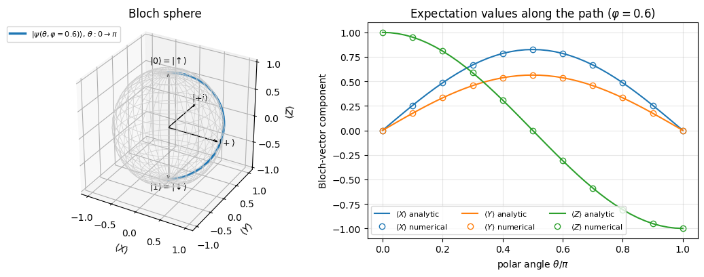
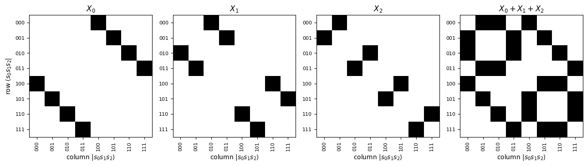
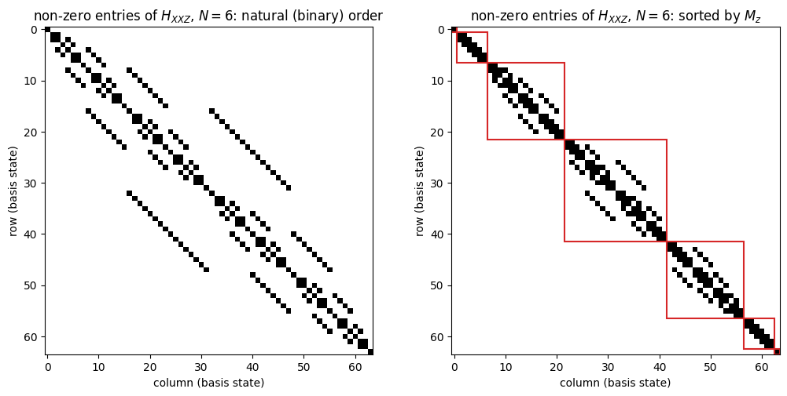
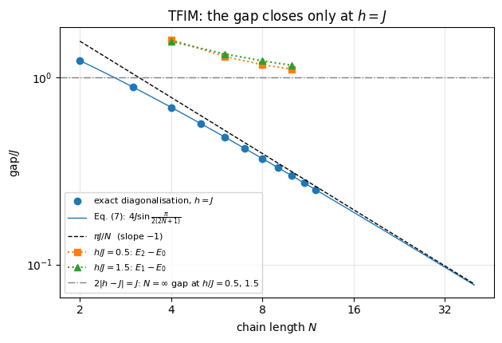
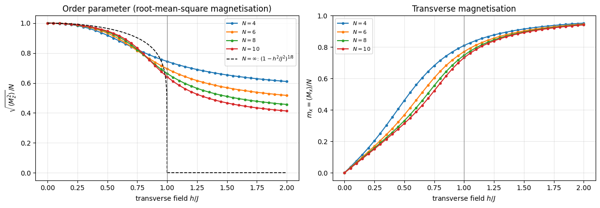
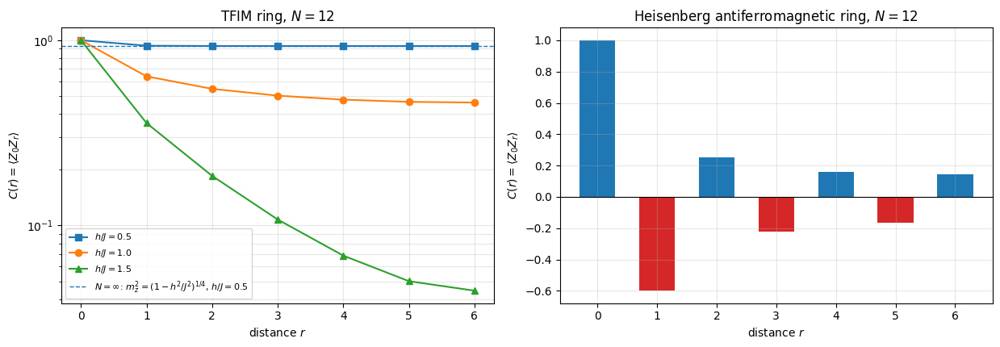
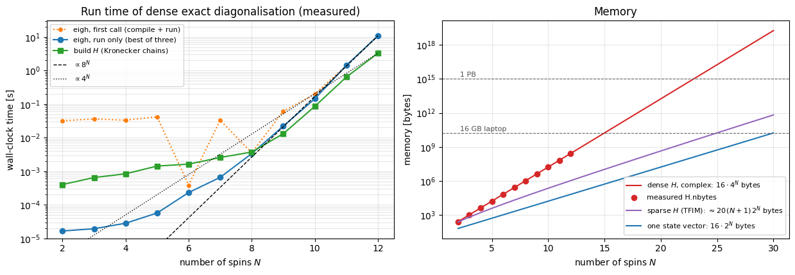

Quantum Many-Body Simulation — Chapter 2 — Quantum many-body spin systems with dense matrices
1. Introduction and motivation
A single spin-1/2 is the simplest quantum system there is: two basis states, three Pauli matrices, and everything can be solved with pen and paper. A quantum many-body spin system is what you get when you put \(N\) such spins next to each other and let them interact. Nothing new is added to the rules of quantum mechanics, and yet the result is one of the richest subjects of modern physics:
Magnetism. The electrons localised on the ions of an insulating crystal carry spins that are coupled to their neighbours by the exchange interaction. Ferromagnets, antiferromagnets and the still mysterious quantum spin liquids are all collective states of many interacting spins. The quasi-one-dimensional magnet CoNb\(_2\)O\(_6\), for instance, is an almost ideal realisation of the transverse-field Ising chain that we will diagonalise below.
Quantum simulators. Chains and arrays of trapped ions, neutral atoms excited to Rydberg states, ultracold atoms in optical lattices and superconducting circuits all realise, to an excellent approximation, spin-1/2 Hamiltonians whose couplings the experimentalist can program. Experiments with 50–256 spins exist today (Bernien et al. 2017: 51 Rydberg atoms; Zhang et al. 2017: 53 trapped ions; Ebadi et al. 2021: 256 Rydberg atoms — all in the references).
Quantum computers. A qubit is a spin-1/2. A quantum processor with \(N\) qubits is an interacting spin system whose Hamiltonian is switched on and off in time. Everything you learn here about \(N\) spins is, word for word, the mathematics of \(N\) qubits.
Quantum phase transitions. The ground state of a many-body system can change its character abruptly when a parameter of the Hamiltonian (a magnetic field, say) is tuned through a critical value. Such transitions are a central theme of condensed-matter physics.
The catch is the size of the problem. One spin needs 2 complex numbers, two spins need 4, and \(N\) spins need \(2^N\). This exponential growth is the reason why classical computers struggle with quantum matter and why Feynman proposed quantum simulators in the first place. The aim is to push a classical computer as far as it can go, and to understand exactly where and why it stops.
We start with the most direct method, the one found in every textbook: write every operator as a \(2^N\times 2^N\) matrix (with Kronecker products), add the matrices up to get the Hamiltonian, and hand it to a dense eigenvalue solver. This is called exact diagonalisation (ED). There are no tricks here; the goal is to understand the objects. At the end we will measure how quickly this approach hits the exponential wall, and that will motivate the matrix-free methods of the rest of the course.
Road map
One spin-1/2 (Section 2): states, Pauli matrices, the Bloch sphere, expectation values, the Born rule.
Two spins (Section 3): the tensor product and the Kronecker product, by hand and with jnp.kron; product states versus entangled states (the singlet); operators \(A\otimes 1\) and \(1\otimes B\); our first interacting Hamiltonian.
\(N\) spins (Section 4): the \(2^N\)-dimensional Hilbert space, labelling basis states by bit strings, the flat-index convention used in the whole course, site operators \(\sigma_j^\alpha\) as a chain of Kronecker products (site_operator), the total magnetisation.
Model Hamiltonians (Section 5): transverse-field Ising model (TFIM), Heisenberg and XXZ chains, and the physical systems they describe.
Building the Hamiltonian matrix (Section 6): build_hamiltonian_dense, Hermiticity, symmetries and the block structure they imply.
Exact diagonalisation (Section 7): spectrum, the energy gap of the TFIM as a function of the field and the finite-size precursor of the quantum critical point at \(h=J\), order parameters, ground-state correlations, the Heisenberg antiferromagnet.
The exponential wall (Section 8): measured run times and memory, sparse matrices as the traditional remedy, and an announcement of the matrix-free remedy that this course is about.
What you will learn
Physics
what the Hilbert space of \(N\) spins looks like and what “entangled” means;
what the transverse-field Ising and Heisenberg/XXZ Hamiltonians describe and where they are realised;
what an energy gap, an order parameter and a correlation function are, and how a quantum phase transition shows up in a finite system;
how symmetries (magnetisation conservation, spin-flip parity) organise the spectrum.
Numerical methods
the Kronecker product and how it turns single-spin operators into many-body matrices;
exact diagonalisation with a dense Hermitian eigensolver and how to check its output;
cost accounting: memory \(O(4^N)\) and time \(O(8^N)\) of the dense approach, versus \(O(N2^N)\) memory for sparse matrices and \(O(2^N)\) for a single state vector.
Implementation practice
small pure functions with documented conventions, validated against analytic results at every step;
index conventions (which spin is the most significant bit) — the classic source of silent bugs;
timing of JAX code (block_until_ready, compile time versus run time), and jax.jit + jax.vmap to run a parameter sweep as a single compiled program.
Prerequisites
One semester of quantum mechanics (spin-1/2, Pauli matrices, eigenvalues and eigenvectors) and the two previous notebooks: 01 — JAX (arrays, jit, vmap, timing) and 02 — einsum from scratch (index notation, reshape and C-ordering). We use jax.numpy (imported as jnp) for all arrays, but nothing more advanced than matrix products and kron.
Configuration
Every notebook of this course starts with the same cell. Choose where to run (DEVICE) and the floating-point precision (PRECISION): "double" = float64/complex128 (default, recommended for physics), "single" = float32/complex64 (half the memory, faster on consumer GPUs, but watch the round-off). All code below derives its dtypes from RDTYPE/CDTYPE and its check tolerances from TOL, so nothing else needs to change.
Code
# ==============================================================================# CONFIGURATION -- adapt to your hardware, then run the notebook top to bottom# ==============================================================================DEVICE ="auto"# "auto": use a GPU if JAX finds one, else CPU | "cpu" | "gpu"PRECISION ="double"# "double": float64/complex128 | "single": float32/complex64import osif DEVICE =="cpu": os.environ["JAX_PLATFORMS"] ="cpu"# must be set BEFORE jax is importedimport stringfrom functools import partialimport mathimport numpy as npimport jaximport jax.numpy as jnpfrom jax import lax# Precision is configurable: "double" = float64/complex128 (default; needed for long time evolutions and# tight validation), "single" = float32/complex64 (half the memory, faster on consumer GPUs).# In a notebook PRECISION is defined in the Configuration cell; for this module use the env var QE_PRECISION.PRECISION =globals().get("PRECISION", os.environ.get("QE_PRECISION", "double"))jax.config.update("jax_enable_x64", PRECISION =="double")RDTYPE = jnp.float64 if PRECISION =="double"else jnp.float32 # real dtypeCDTYPE = jnp.complex128 if PRECISION =="double"else jnp.complex64 # complex dtype of all states/operatorsTOL =1e-10if PRECISION =="double"else1e-4# tolerance for sanity checks (asserts)_LETTERS = string.ascii_letters # the 52 einsum index labels a-z, A-Zimport timeimport matplotlib.pyplot as pltif DEVICE =="gpu"and jax.default_backend() =="cpu":print("WARNING: DEVICE='gpu' requested but JAX found no GPU -- running on CPU.")print(f"JAX {jax.__version__} | backend: {jax.default_backend()} | devices: {jax.devices()}")print(f"precision: {PRECISION} -> real {RDTYPE.__name__}, complex {CDTYPE.__name__}, check tolerance TOL={TOL:g}")
JAX 0.11.0 | backend: cpu | devices: [CpuDevice(id=0)]
precision: double -> real float64, complex complex128, check tolerance TOL=1e-10
2. One spin-1/2
2.1 States and Pauli matrices
The state of a spin-1/2 (Sakurai and Napolitano, Ch. 1; Nielsen and Chuang, Ch. 1) is a normalised vector in the two-dimensional complex vector space \(\mathbb{C}^2\). We choose once and for all the basis of eigenstates of the \(z\) component of the spin and write
The labels \(0\) and \(1\) are the quantum-information names of “up” and “down”; we will use both. The spin operator is \(\hat{\mathbf S} = \frac{\hbar}{2}\boldsymbol\sigma\) with the three Pauli matrices
\[ X \equiv \sigma^x = \begin{pmatrix}0&1\\1&0\end{pmatrix},\qquad
Y \equiv \sigma^y = \begin{pmatrix}0&-i\\i&0\end{pmatrix},\qquad
Z \equiv \sigma^z = \begin{pmatrix}1&0\\0&-1\end{pmatrix}. \]
Convention of the whole course.\(|0\rangle=(1,0)^T\) is the \(+1\) eigenstate of \(Z\) (“spin up”), \(|1\rangle=(0,1)^T\) the \(-1\) eigenstate (“spin down”). We work with Pauli matrices (eigenvalues \(\pm1\)) instead of the spin operators \(S^\alpha=\sigma^\alpha/2\), and we set \(\hbar=1\). When you compare with a paper written in terms of \(S^\alpha\), couplings differ by factors of 4 (two-spin terms) and 2 (field terms).
The Pauli matrices have three properties that we will use again and again:
they are Hermitian (\(\sigma^\dagger=\sigma\), so they are observables) and square to the identity (\(\sigma^2=1\), so their eigenvalues are \(\pm1\));
different Pauli matrices anticommute: \(XY=-YX\), etc.;
their commutators close: \([X,Y]=2iZ\) and cyclic permutations (this is the angular-momentum algebra \([S^x,S^y]=iS^z\) in disguise).
Together with the identity they form a basis of all \(2\times2\) matrices. Let us define them and let the computer confirm the algebra. We also define a tiny helper checkpoint that prints an error and asserts that it is below the tolerance TOL of the configuration cell — we will use it for every test in this notebook.
Code
# ==============================================================================# STEP 1: the single-spin building blocks# ==============================================================================# CDTYPE (complex128 by default) comes from the Configuration cell above.I2 = jnp.eye(2, dtype=CDTYPE) # identityX = jnp.array([[0, 1], [1, 0]], dtype=CDTYPE) # sigma^x : flips the spinY = jnp.array([[0, -1j], [1j, 0]], dtype=CDTYPE) # sigma^y : flips the spin with phases -+iZ = jnp.array([[1, 0], [0, -1]], dtype=CDTYPE) # sigma^z : +1 for up, -1 for downup = jnp.array([1, 0], dtype=CDTYPE) # |0> = |up> : Z|0> = +|0>down = jnp.array([0, 1], dtype=CDTYPE) # |1> = |down> : Z|1> = -|1>def checkpoint(label, err, tol=TOL):"""Print a validation error and stop the notebook if it is not below the tolerance. Every numerical claim in these notes is backed by such a check against an independent reference. """ err =float(err)print(f" [{'ok'if err < tol else'FAIL'}] {label:<58s} error = {err:.2e}")assert err < tol, f"checkpoint failed: {label}"def commutator(A, B):"""[A, B] = AB - BA."""return A @ B - B @ Aprint("Checkpoint: Pauli algebra")for name, P in (("X", X), ("Y", Y), ("Z", Z)): checkpoint(f"{name} is Hermitian", jnp.abs(P - P.conj().T).max()) checkpoint(f"{name}^2 = 1", jnp.abs(P @ P - I2).max())checkpoint("XY + YX = 0 (anticommutation)", jnp.abs(X @ Y + Y @ X).max())checkpoint("[X, Y] = 2iZ", jnp.abs(commutator(X, Y) -2j* Z).max())checkpoint("[Y, Z] = 2iX", jnp.abs(commutator(Y, Z) -2j* X).max())checkpoint("[Z, X] = 2iY", jnp.abs(commutator(Z, X) -2j* Y).max())checkpoint("Z|0> = +|0> and Z|1> = -|1>", jnp.abs(Z @ up - up).max() + jnp.abs(Z @ down + down).max())checkpoint("X|0> = |1> (X flips the spin)", jnp.abs(X @ up - down).max())
All identities hold to machine precision. \(X\)flips the spin, \(X|0\rangle=|1\rangle\), \(X|1\rangle=|0\rangle\). In a many-body Hamiltonian a term \(X_j\) will therefore connect basis states that differ by one flipped spin — remember this when we look at the matrix structure in Section 4.
2.2 The Bloch sphere
A normalised state has two complex amplitudes, i.e. four real numbers, minus one for the normalisation and minus one for the global phase (which has no physical meaning). Two real parameters remain, and they can be chosen as angles on a sphere:
The expectation value of an observable \(O\) in the state \(|\psi\rangle\) is \(\langle O\rangle = \langle\psi|O|\psi\rangle = \sum_{ab}\psi_a^*\,O_{ab}\,\psi_b\). For the three Pauli matrices a two-line calculation gives (worth doing once by hand)
with \(a=\cos\frac\theta2\), \(b=e^{i\varphi}\sin\frac\theta2\). The vector \(\mathbf r=(\langle X\rangle,\langle Y\rangle,\langle Z\rangle)\) is the Bloch vector; for a pure state it is the unit vector with polar angle \(\theta\) and azimuth \(\varphi\). The north pole is \(|0\rangle\) (spin up), the south pole \(|1\rangle\), and the points on the equator are equal-weight superpositions such as \(|{+}\rangle=(|0\rangle+|1\rangle)/\sqrt2\), the \(+1\) eigenstate of \(X\). The state of one spin-1/2 is fully described by the direction in which it points — a classical-looking picture that, as we will see, fails completely for two spins.
From formula to code.bloch_state is the formula above; expval computes \(\psi^\dagger(O\psi)\) with jnp.vdot, which complex-conjugates its first argument. To evaluate the Bloch vector for many angles at once we do not write a loop: jax.vmap turns the function written for one \(\theta\) into a function for a whole array of \(\theta\)’s (see notebook 01). Writing numerical code as operations on whole arrays rather than loops over components is also the style adopted in Press et al., Numerical Recipes in Fortran 90.
Code
# ==============================================================================# STEP 2: states on the Bloch sphere and expectation values# ==============================================================================def bloch_state(theta, phi):"""Spin-1/2 state pointing along the direction (theta, phi). MATH |psi> = cos(theta/2)|0> + e^{i phi} sin(theta/2)|1> """return jnp.array([jnp.cos(theta /2), jnp.exp(1j* phi) * jnp.sin(theta /2)], dtype=CDTYPE)def expval(psi, O):"""Expectation value <psi|O|psi> of a Hermitian matrix O in the (normalised) state vector psi. MATH <O> = sum_{ab} psi_a^* O_ab psi_b = psi^dagger (O psi) (real because O is Hermitian) COST one matrix-vector product: O(d^2) for a dense d x d matrix. """return jnp.real(jnp.vdot(psi, O @ psi))def bloch_vector(psi):"""Bloch vector (<X>, <Y>, <Z>) of a single-spin state."""return jnp.stack([expval(psi, X), expval(psi, Y), expval(psi, Z)])# --- checkpoint: the numerical Bloch vector equals the analytic unit vector ------------------------phi0 =0.6thetas = jnp.linspace(0.0, jnp.pi, 41)r_num = jax.vmap(lambda th: bloch_vector(bloch_state(th, phi0)))(thetas) # shape (41, 3)r_exact = jnp.stack([jnp.sin(thetas) * jnp.cos(phi0), jnp.sin(thetas) * jnp.sin(phi0), jnp.cos(thetas)], axis=1)print("Checkpoint: Bloch vector")checkpoint("(<X>,<Y>,<Z>) = (sin t cos p, sin t sin p, cos t)", jnp.abs(r_num - r_exact).max())checkpoint("|r| = 1 for every pure state", jnp.abs(jnp.linalg.norm(r_num, axis=1) -1).max())# --- figure: the path on the sphere and the three components ---------------------------------------fig = plt.figure(figsize=(11, 4.2))ax = fig.add_subplot(1, 2, 1, projection="3d")u, v = np.meshgrid(np.linspace(0, 2* np.pi, 37), np.linspace(0, np.pi, 19))ax.plot_wireframe(np.cos(u) * np.sin(v), np.sin(u) * np.sin(v), np.cos(v), color="0.8", linewidth=0.5)ax.plot(*np.asarray(r_num).T, color="C0", lw=2.5, label=rf"$|\psi(\theta,\varphi={phi0})\rangle$, $\theta:0\to\pi$")for vec, lab in (((0, 0, 1), r"$|0\rangle=|\!\uparrow\rangle$"), ((0, 0, -1), r"$|1\rangle=|\!\downarrow\rangle$"), ((1, 0, 0), r"$|+\rangle$"), ((0, 1, 0), r"$|{+}i\rangle$")): ax.quiver(0, 0, 0, *vec, color="k", arrow_length_ratio=0.08, linewidth=1) ax.text(*(1.18* np.array(vec)), lab, ha="center", fontsize=9)ax.set_xlabel(r"$\langle X\rangle$"); ax.set_ylabel(r"$\langle Y\rangle$"); ax.set_zlabel(r"$\langle Z\rangle$")ax.set_title("Bloch sphere"); ax.set_box_aspect((1, 1, 1)); ax.legend(loc="upper left", bbox_to_anchor=(-0.25, 1.0), fontsize=8)ax2 = fig.add_subplot(1, 2, 2)for k, (lab, col) inenumerate(((r"$\langle X\rangle$", "C0"), (r"$\langle Y\rangle$", "C1"), (r"$\langle Z\rangle$", "C2"))): ax2.plot(thetas / np.pi, r_exact[:, k], color=col, label=lab +" analytic") ax2.plot(thetas[::4] / np.pi, r_num[::4, k], "o", color=col, mfc="none", label=lab +" numerical")ax2.set_xlabel(r"polar angle $\theta/\pi$"); ax2.set_ylabel("Bloch-vector component")ax2.set_title(rf"Expectation values along the path ($\varphi={phi0}$)"); ax2.grid(alpha=0.3); ax2.legend(fontsize=8, ncol=3)plt.tight_layout(); plt.show()
Checkpoint: Bloch vector
[ok] (<X>,<Y>,<Z>) = (sin t cos p, sin t sin p, cos t) error = 1.94e-16
[ok] |r| = 1 for every pure state error = 2.22e-16

The blue path runs from the north pole (\(\theta=0\), spin up) to the south pole along the meridian \(\varphi=0.6\); the circles (numerical \(\langle\psi|\sigma^\alpha|\psi\rangle\)) sit on the analytic curves.
2.3 Measurement: the Born rule
Expectation values are averages over many measurements. A single measurement of the spin along a unit vector \(\mathbf n\) (the observable \(\mathbf n\cdot\boldsymbol\sigma = n_xX+n_yY+n_zZ\)) can only give one of the eigenvalues, \(+1\) or \(-1\). If \(|{\pm}\mathbf n\rangle\) are the corresponding eigenvectors, the Born rule states
The last equality says that the Bloch vector determines the statistics of every possible spin measurement. We verify it numerically: the eigenvectors come from jnp.linalg.eigh, the workhorse of this notebook. For a Hermitian matrix A, w, v = jnp.linalg.eigh(A) returns the real eigenvalues w in ascending order and a unitary matrix v whose columnsv[:, k] are the eigenvectors: \(A\,v_{:,k} = w_k\,v_{:,k}\).
Code
# ==============================================================================# STEP 3: Born rule for a spin measured along an arbitrary direction n# ==============================================================================n = jnp.array([1.0, 2.0, 2.0]) /3.0# a unit vector: (1^2 + 2^2 + 2^2)/9 = 1n_sigma = n[0] * X + n[1] * Y + n[2] * Z # the observable n . sigmaw, v = jnp.linalg.eigh(n_sigma) # w = [-1, +1] ; columns of v = eigenvectorsprint("eigenvalues of n.sigma:", np.round(np.asarray(w), 12))psi = bloch_state(1.1, 0.4) # some statep_minus = jnp.abs(jnp.vdot(v[:, 0], psi)) **2# Born rule: |<-n|psi>|^2p_plus = jnp.abs(jnp.vdot(v[:, 1], psi)) **2# |<+n|psi>|^2print(f"p(+1) = {float(p_plus):.6f}, p(-1) = {float(p_minus):.6f}")print("Checkpoint: Born rule")checkpoint("eigenvalues of n.sigma are -1, +1", jnp.abs(w - jnp.array([-1.0, 1.0])).max())checkpoint("p(+1) + p(-1) = 1", jnp.abs(p_plus + p_minus -1))checkpoint("(+1)p(+1) + (-1)p(-1) = <psi|n.sigma|psi>", jnp.abs((p_plus - p_minus) - expval(psi, n_sigma)))checkpoint("<n.sigma> = n . r (Bloch vector)", jnp.abs(expval(psi, n_sigma) - n @ bloch_vector(psi)))
eigenvalues of n.sigma: [-1. 1.]
p(+1) = 0.903692, p(-1) = 0.096308
Checkpoint: Born rule
[ok] eigenvalues of n.sigma are -1, +1 error = 0.00e+00
Any spin component of a spin-1/2 has eigenvalues \(\pm1\) (because \((\mathbf n\cdot\boldsymbol\sigma)^2=1\), a consequence of the anticommutation relations), and the measurement statistics follow from the Bloch vector, so a pure state of one spin is completely characterised by its Bloch vector.
3. Two spins: the tensor product
3.1 The product space and the Kronecker product
Take two spins, labelled 0 and 1 (we count from zero, as Python does). If spin 0 is in state \(|a\rangle=(a_0,a_1)^T\) and spin 1 in state \(|b\rangle=(b_0,b_1)^T\), the pair is in the product state\(|a\rangle\otimes|b\rangle\). Quantum mechanics postulates that the state space of the pair is the tensor product\(\mathbb C^2\otimes\mathbb C^2=\mathbb C^4\) (Nielsen and Chuang, Ch. 2; Sakurai and Napolitano, Ch. 3): the vector space spanned by the four products of basis states
so that a general two-spin state is \(|\psi\rangle = \sum_{s_0,s_1\in\{0,1\}} \psi_{s_0s_1}\,|s_0s_1\rangle\) with four complex amplitudes.
To put this on a computer we must agree on how to order the four basis states in a column vector. We use the order written above — read the label \(s_0s_1\) as a binary number: \(|00\rangle\to0\), \(|01\rangle\to1\), \(|10\rangle\to2\), \(|11\rangle\to3\), i.e.
\[ \text{flat index}\quad i = 2s_0 + s_1 . \]
With this ordering the components of a product state are \((a\otimes b)_{2s_0+s_1} = a_{s_0}\,b_{s_1}\):
This operation — “replace every entry of the left factor by that entry times the whole right factor” — is the Kronecker product. It works in the same way for matrices: for \(A\) of shape \(m\times n\) and \(B\) of shape \(p\times q\),
a matrix of shape \(mp\times nq\). It is the matrix of the operator “\(A\) acts on spin 0 and \(B\) acts on spin 1” in our ordered basis, because it is built precisely such that
From formula to code. We first implement the index formula literally, with four nested loops, so that every operation is visible. (JAX arrays are immutable, so we fill a NumPy array and convert at the end.) Then we check that the library routine jnp.kron does the same thing, and from then on we use jnp.kron.
Code
# ==============================================================================# STEP 4: the Kronecker product by hand# ==============================================================================def kron_by_hand(A, B):"""Kronecker product of two matrices, written as the definition. MATH (A (x) B)[i*p + k, j*q + l] = A[i, j] * B[k, l] A: (m, n), B: (p, q) -> (m*p, n*q) IMPLEMENTATION four explicit loops -- for teaching only; use jnp.kron in real code. """ A, B = np.asarray(A), np.asarray(B) (m, n_), (p, q) = A.shape, B.shape out = np.zeros((m * p, n_ * q), dtype=np.result_type(A, B))for i inrange(m):for j inrange(n_):for k inrange(p):for l inrange(q): out[i * p + k, j * q + l] = A[i, j] * B[k, l]return jnp.asarray(out)print("X (x) Z by hand =")print(np.asarray(kron_by_hand(X, Z)).real.astype(int))print("\nCheckpoint: by hand vs library")checkpoint("kron_by_hand(X, Z) == jnp.kron(X, Z)", jnp.abs(kron_by_hand(X, Z) - jnp.kron(X, Z)).max())checkpoint("kron_by_hand(Y, X) == jnp.kron(Y, X)", jnp.abs(kron_by_hand(Y, X) - jnp.kron(Y, X)).max())# a ket is a matrix with one column: the same formula covers statesa, b = bloch_state(0.7, 0.2), bloch_state(2.1, 1.3)checkpoint("states: kron_by_hand(a, b) == jnp.kron(a, b)", jnp.abs(kron_by_hand(a[:, None], b[:, None])[:, 0] - jnp.kron(a, b)).max())
X (x) Z by hand =
[[ 0 0 1 0]
[ 0 0 0 -1]
[ 1 0 0 0]
[ 0 -1 0 0]]
Checkpoint: by hand vs library
[ok] kron_by_hand(X, Z) == jnp.kron(X, Z) error = 0.00e+00
[ok] kron_by_hand(Y, X) == jnp.kron(Y, X) error = 0.00e+00
[ok] states: kron_by_hand(a, b) == jnp.kron(a, b) error = 3.47e-18
Look at the printed matrix: it is the block matrix \(\begin{pmatrix}0\cdot Z & 1\cdot Z\\ 1\cdot Z & 0\cdot Z\end{pmatrix}\) — the pattern of the left factor \(X\) is visible at the level of \(2\times2\) blocks, and each block is a copy of the right factor \(Z\).
Common pitfall. The Kronecker product is not commutative: \(X\otimes Z\neq Z\otimes X\). The left factor belongs to spin 0 and varies slowest in the flat index. Confusing which factor is which spin is one of the most common bugs in many-body codes. In this course: spin \(q\) = Kronecker factor number \(q\) counted from the left = bit number \(q\) of the label \(s_0s_1\ldots\) read from the left (most significant bit first).
3.2 Basis states and product states
Let us build the four basis states as Kronecker products and see where the single 1 ends up.
Code
# ==============================================================================# STEP 5: the two-spin basis |s0 s1> and its flat index i = 2*s0 + s1# ==============================================================================kets = {0: up, 1: down}print(" s0 s1 | flat index | vector")for s0 in (0, 1):for s1 in (0, 1): vec = jnp.kron(kets[s0], kets[s1]) # |s0> (x) |s1> idx =int(jnp.argmax(jnp.abs(vec))) # position of the single 1print(f" {s0}{s1} | {idx} | {np.asarray(vec).real.astype(int)}")assert idx ==2* s0 + s1
The operator “\(Z\) on spin 0, nothing on spin 1” acts on spin 1 with the identity, so its matrix is \(Z_0 \equiv Z\otimes 1\); likewise \(Z_1\equiv 1\otimes Z\):
\[ Z\otimes 1 = \mathrm{diag}(1,1,-1,-1),\qquad 1\otimes Z = \mathrm{diag}(1,-1,1,-1). \]
Read these diagonals against the basis order \(|00\rangle,|01\rangle,|10\rangle,|11\rangle\): \(Z_0\) gives \(+1\) when the first label is 0, and \(Z_1\) gives \(+1\) when the second label is 0.
Two algebraic facts follow from the mixed-product property\((A\otimes B)(C\otimes D) = (AC)\otimes(BD)\) (which is Eq. (1) written for matrices; prove it from the index formula in one line):
operators on different spins commute: \((A\otimes1)(1\otimes B) = A\otimes B = (1\otimes B)(A\otimes 1)\);
a product of operators on different spins is a Kronecker product: \(Z_0Z_1 = Z\otimes Z\).
We verify these statements with random matrices. JAX random numbers need an explicit key (notebook 01); a fixed seed makes the notebook reproducible.
Code
# ==============================================================================# STEP 6: A (x) 1, 1 (x) B and the mixed-product property# ==============================================================================Z0 = jnp.kron(Z, I2) # Z on spin 0Z1 = jnp.kron(I2, Z) # Z on spin 1print("diag(Z (x) 1) =", np.asarray(jnp.diag(Z0)).real.astype(int))print("diag(1 (x) Z) =", np.asarray(jnp.diag(Z1)).real.astype(int))def random_matrix(key, d):"""A random complex d x d matrix (explicit PRNG key -> reproducible).""" k1, k2 = jax.random.split(key)return (jax.random.normal(k1, (d, d)) +1j* jax.random.normal(k2, (d, d))).astype(CDTYPE)kA, kB, kC, kD = jax.random.split(jax.random.PRNGKey(0), 4)A, B, C, D = (random_matrix(k, 2) for k in (kA, kB, kC, kD))print("\nCheckpoint: Kronecker algebra (random 2x2 matrices)")checkpoint("(A(x)B)(C(x)D) = (AC)(x)(BD)", jnp.abs(jnp.kron(A, B) @ jnp.kron(C, D) - jnp.kron(A @ C, B @ D)).max())checkpoint("(A(x)1)(1(x)B) = A(x)B", jnp.abs(jnp.kron(A, I2) @ jnp.kron(I2, B) - jnp.kron(A, B)).max())checkpoint("[A(x)1, 1(x)B] = 0", jnp.abs(commutator(jnp.kron(A, I2), jnp.kron(I2, B))).max())checkpoint("(A(x)B)(a(x)b) = (Aa)(x)(Bb) [Eq. (1)]", jnp.abs(jnp.kron(A, B) @ jnp.kron(a, b) - jnp.kron(A @ a, B @ b)).max())checkpoint("Z_0 Z_1 = Z (x) Z", jnp.abs(Z0 @ Z1 - jnp.kron(Z, Z)).max())
3.4 Product states versus entangled states: the singlet
A product state \(|a\rangle\otimes|b\rangle\) is described by two Bloch vectors: each spin has “its own state”. But the four-dimensional space contains much more than product states. The best-known example is the singlet
Claim: the singlet cannot be written as a product state. Here is a test that works for any two-spin state. Arrange the four amplitudes in a \(2\times2\) matrix \(\psi_{s_0s_1}\) — in code simply psi.reshape(2, 2), thanks to the index convention \(i=2s_0+s_1\) (this is the C-ordering of notebook 02). For a product state this matrix is the outer product \(\psi_{s_0s_1}=a_{s_0}b_{s_1}\), whose two rows are proportional to each other, hence \(\det\psi = a_0b_0\,a_1b_1 - a_0b_1\,a_1b_0 = 0\). Conversely, a \(2\times2\) matrix with zero determinant has rank \(\le1\) and can be written as an outer product. So
\[ |\psi\rangle \text{ is a product state} \iff \det\begin{pmatrix}\psi_{00}&\psi_{01}\\ \psi_{10}&\psi_{11}\end{pmatrix} = 0 . \]
For the singlet \(\det\psi = 0\cdot0-\frac{1}{\sqrt2}\cdot\left(-\frac{1}{\sqrt2}\right)=\frac12\neq0\): it is entangled. (The quantity \(2|\det\psi|\in[0,1]\) is known as the concurrence; the systematic tool for more than two spins, the Schmidt decomposition, is the subject of notebook 06.)
Entanglement has a striking physical signature. We compute, for a product state and for the singlet, the local expectation values \(\langle \sigma^\alpha_0\rangle\) and the correlations \(\langle\sigma^\alpha_0\sigma^\alpha_1\rangle\).
Code
# ==============================================================================# STEP 7: a product state and the singlet# ==============================================================================product = jnp.kron(up, down) # |01> = |up, down>singlet = (jnp.kron(up, down) - jnp.kron(down, up)) / jnp.sqrt(2.0)def concurrence_two_spins(psi):"""2|det psi_{s0 s1}| : 0 for product states, 1 for maximally entangled two-spin states."""return2* jnp.abs(jnp.linalg.det(psi.reshape(2, 2)))for name, state in (("product |01>", product), ("singlet", singlet)):print(f"{name:>13s}: 2|det psi| = {float(concurrence_two_spins(state)):.3f}")for P, lab in ((X, "X"), (Y, "Y"), (Z, "Z")): loc0 =float(expval(state, jnp.kron(P, I2))) # <P on spin 0> loc1 =float(expval(state, jnp.kron(I2, P))) # <P on spin 1> corr =float(expval(state, jnp.kron(P, P))) # <P_0 P_1>print(f"{'':>15s}<{lab}_0> = {loc0:+.3f} <{lab}_1> = {loc1:+.3f} <{lab}_0 {lab}_1> = {corr:+.3f}")print("\nCheckpoint: singlet")checkpoint("singlet is normalised", jnp.abs(jnp.linalg.norm(singlet) -1))checkpoint("all local Bloch vectors vanish",sum(jnp.abs(expval(singlet, jnp.kron(P, I2))) + jnp.abs(expval(singlet, jnp.kron(I2, P))) for P in (X, Y, Z)))checkpoint("<P_0 P_1> = -1 for P = X, Y, Z", sum(jnp.abs(expval(singlet, jnp.kron(P, P)) +1) for P in (X, Y, Z)))
Physics insight. In the product state \(|01\rangle\) each spin has a definite Bloch vector (\(\langle Z_0\rangle=+1\), \(\langle Z_1\rangle=-1\)) and the correlation is just the product of the two, \(\langle Z_0Z_1\rangle=\langle Z_0\rangle\langle Z_1\rangle=-1\); there are no correlations along \(x\) or \(y\). In the singlet every local expectation value is zero — each spin on its own looks completely random, its Bloch vector has length zero — and yet the two spins are perfectly anticorrelated along every axis. The information resides in the correlations between the parts. No assignment of “a direction to each spin” can reproduce this. This is what makes many-body quantum states hard to describe classically, and it is the resource behind quantum technologies.
3.5 Our first interacting Hamiltonian
A singlet is produced by interactions. The exchange interaction between two electron spins has the Heisenberg form
\[ H_2 = J\,\boldsymbol\sigma_0\cdot\boldsymbol\sigma_1 = J\,(X\otimes X + Y\otimes Y + Z\otimes Z). \]
Its spectrum follows from a classic trick. The total spin is \(\mathbf S_{\rm tot}=\frac12(\boldsymbol\sigma_0+\boldsymbol\sigma_1)\), so \(\mathbf S_{\rm tot}^2=\frac14(\boldsymbol\sigma_0^2+\boldsymbol\sigma_1^2+2\,\boldsymbol\sigma_0\cdot\boldsymbol\sigma_1) =\frac14(3+3+2\,\boldsymbol\sigma_0\cdot\boldsymbol\sigma_1)\), using \(\boldsymbol\sigma^2=X^2+Y^2+Z^2=3\). Since \(\mathbf S_{\rm tot}^2\) has eigenvalues \(s(s+1)\) with \(s=0\) (singlet, one state) or \(s=1\) (triplet, three states),
For \(J>0\) (antiferromagnetic coupling) the ground state is the entangled singlet, with energy \(-3J\). This is lower than the energy \(-J\) of the “classical” antiparallel configuration \(|01\rangle\): quantum fluctuations (\(XX+YY\) flips \(|01\rangle\leftrightarrow|10\rangle\)) lower the energy further. Let the computer diagonalise the \(4\times4\) matrix.
Code
# ==============================================================================# STEP 8: exact diagonalisation of two Heisenberg-coupled spins# ==============================================================================H2 = jnp.kron(X, X) + jnp.kron(Y, Y) + jnp.kron(Z, Z) # J = 1E2, V2 = jnp.linalg.eigh(H2)print("H_2 =\n", np.asarray(H2).real.astype(int))print("eigenvalues:", np.round(np.asarray(E2), 12))print("Checkpoint: two-spin Heisenberg model")checkpoint("spectrum = {-3, +1, +1, +1}", jnp.abs(E2 - jnp.array([-3.0, 1.0, 1.0, 1.0])).max())checkpoint("ground state = singlet (overlap modulus 1)", jnp.abs(jnp.abs(jnp.vdot(singlet, V2[:, 0])) -1))print(f"energy of the classical Neel state |01>: {float(expval(product, H2)):+.1f} (singlet: -3)")
H_2 =
[[ 1 0 0 0]
[ 0 -1 2 0]
[ 0 2 -1 0]
[ 0 0 0 1]]
eigenvalues: [-3. 1. 1. 1.]
Checkpoint: two-spin Heisenberg model
[ok] spectrum = {-3, +1, +1, +1} error = 0.00e+00
[ok] ground state = singlet (overlap modulus 1) error = 2.22e-16
energy of the classical Neel state |01>: -1.0 (singlet: -3)
This was a complete exact diagonalisation: build the Hamiltonian matrix with Kronecker products, call eigh, check the result against theory. (The overlap is compared in modulus because an eigenvector is only defined up to a phase — eigh may return \(-|S\rangle\).) The rest of the notebook does exactly the same for \(N\) spins.
4. \(N\) spins
4.1 Hilbert space, bit strings and the flat index
For \(N\) spins the construction is repeated: the Hilbert space is \(\mathbb C^2\otimes\mathbb C^2\otimes\cdots\otimes\mathbb C^2=\mathbb C^{2^N}\), with basis states labelled by bit strings
A general state has \(2^N\) complex amplitudes \(\psi_{s_0\ldots s_{N-1}}\). Applying the Kronecker rule repeatedly (left factor = slowest index) gives the position of a basis state in the state vector:
In words: read the bit string as a binary number; spin 0 is the most significant bit. For \(N=3\):
flat index \(i\)
0
1
2
3
4
5
6
7
\(\vert s_0s_1s_2\rangle\)
000
001
010
011
100
101
110
111
spins
\(\uparrow\uparrow\uparrow\)
\(\uparrow\uparrow\downarrow\)
\(\uparrow\downarrow\uparrow\)
\(\uparrow\downarrow\downarrow\)
\(\downarrow\uparrow\uparrow\)
\(\downarrow\uparrow\downarrow\)
\(\downarrow\downarrow\uparrow\)
\(\downarrow\downarrow\downarrow\)
This is the same C-ordering that reshape uses (notebook 02): the state vector of length \(2^N\)is the flattened rank-\(N\) array \(\psi_{s_0\ldots s_{N-1}}\). We will exploit that in notebook 05; here we stay with plain vectors.
From formula to code. Extracting bit \(q\) from the integer \(i\) is a shift and a mask: (i >> (N-1-q)) & 1. With broadcasting we get the whole table of bits, shape \((2^N, N)\), in one line.
Code
# ==============================================================================# STEP 9: bit strings <-> flat index# ==============================================================================def bits_table(N):"""Table of all basis labels: row i holds the bits (s_0, ..., s_{N-1}) of flat index i. MATH i = sum_q s_q 2^(N-1-q) <=> s_q = (i >> (N-1-q)) & 1 (spin 0 = most significant bit) Returns an integer array of shape (2^N, N). """ idx = jnp.arange(2** N)return (idx[:, None] >> jnp.arange(N -1, -1, -1)[None, :]) &1def bits_to_index(bits):"""Flat index of the basis state |s_0 s_1 ... s_{N-1}>, Eq. (2).""" N =len(bits)returnsum(int(s) << (N -1- q) for q, s inenumerate(bits))def basis_state_vector(bits):"""The basis state |s_0 ... s_{N-1}> built the textbook way: a chain of Kronecker products of |0>, |1>.""" vec = jnp.ones((1,), dtype=CDTYPE)for s in bits: vec = jnp.kron(vec, down if s else up)return vecprint("N = 3 basis:\n", np.asarray(bits_table(3)))# --- checkpoint: kron of single-spin kets puts the 1 exactly at the index given by Eq. (2) ----------N =4err =0.0for row in np.asarray(bits_table(N)): e = jnp.zeros(2** N, dtype=CDTYPE).at[bits_to_index(row)].set(1.0) # unit vector at index i err =max(err, float(jnp.abs(basis_state_vector(row) - e).max()))print("Checkpoint: index convention")checkpoint("|s_0..s_3> = kron chain has its 1 at i = sum s_q 2^(N-1-q)", err)
a \(2^N\times2^N\) matrix. We will write \(X_j, Y_j, Z_j\) for short. All many-body operators of this course are sums and products of such site operators.
From formula to code.kron_chain folds a list of \(N\) small matrices into one big matrix with repeated jnp.kron; site_operator(op, j, N) prepares the list “identities everywhere, op at position j” and calls it. By the mixed-product property, a product of two site operators on different sites is again a single Kronecker chain with two non-trivial factors, \(\sigma^\alpha_i\sigma^\beta_j = 1\otimes\cdots\otimes\sigma^\alpha\otimes\cdots\otimes\sigma^\beta\otimes\cdots\otimes1\); two_site_operator builds it directly.
Code
# ==============================================================================# STEP 10: site operators sigma_j = 1 (x) ... (x) sigma (x) ... (x) 1# ==============================================================================def kron_chain(ops):"""Kronecker product of a list of matrices: ops[0] (x) ops[1] (x) ... (x) ops[-1]. CONVENTION ops[q] acts on spin q; ops[0] is the LEFT-most factor (most significant bit). COST the result has 4^N entries for N factors of size 2x2; the last kron dominates: O(4^N). """ out = jnp.ones((1, 1), dtype=CDTYPE) # the 1x1 identity: neutral element of kronfor op in ops: out = jnp.kron(out, op)return outdef site_operator(op, j, N):"""The 2^N x 2^N matrix of a single-spin operator `op` (2x2) acting on spin j of an N-spin system. MATH op_j = 1 (x) ... (x) 1 (x) op (x) 1 (x) ... (x) 1 (op at position j, counted from the left) COST O(4^N) memory and time -- fine for N <= 12, hopeless for N = 30 (see Section 8). """ ops = [I2] * N ops[j] = opreturn kron_chain(ops)def two_site_operator(opA, i, opB, j, N):"""The product opA_i opB_j (i != j) as ONE Kronecker chain with two non-trivial factors. MATH (1 (x).. opA ..(x) 1)(1 (x).. opB ..(x) 1) = 1 (x).. opA .. opB ..(x) 1 (mixed-product property) WHY multiplying two dense site operators costs O(8^N); building the chain directly costs O(4^N). """assert i != j, "use site_operator(opA @ opB, i, N) for operators on the same spin" ops = [I2] * N ops[i], ops[j] = opA, opBreturn kron_chain(ops)N =4bits = bits_table(N)print(f"N = {N}: site operators are {site_operator(Z, 0, N).shape} matrices")print("Checkpoint: site operators")checkpoint("Z_j is diagonal with entries (-1)^{s_j}, all j",max(jnp.abs(site_operator(Z, j, N) - jnp.diag((1-2* bits[:, j]).astype(CDTYPE))).max() for j inrange(N)))checkpoint("[X_0, Y_2] = 0 (different sites commute)", jnp.abs(commutator(site_operator(X, 0, N), site_operator(Y, 2, N))).max())checkpoint("[X_1, Y_1] = 2i Z_1 (same site: Pauli algebra)", jnp.abs(commutator(site_operator(X, 1, N), site_operator(Y, 1, N)) -2j* site_operator(Z, 1, N)).max())checkpoint("X_1 Z_3 = two_site_operator(X, 1, Z, 3)", jnp.abs(site_operator(X, 1, N) @ site_operator(Z, 3, N) - two_site_operator(X, 1, Z, 3, N)).max())# X_j flips bit j: X_j |s> = |s with s_j flipped>, i.e. index i -> i XOR 2^(N-1-j)j, s =2, (0, 1, 1, 0)flipped =list(s); flipped[j] ^=1checkpoint("X_2 |0110> = |0100> (flip of bit 2)", jnp.abs(site_operator(X, j, N) @ basis_state_vector(s) - basis_state_vector(flipped)).max())
N = 4: site operators are (16, 16) matrices
Checkpoint: site operators
[ok] Z_j is diagonal with entries (-1)^{s_j}, all j error = 0.00e+00
The structure of these matrices repays a look. The next cell shows where the non-zero entries of \(X_0, X_1, X_2\) and of the sum \(X_0+X_1+X_2\) sit for \(N=3\).
Code
# ==============================================================================# FIGURE: the matrices of X_j for N = 3# ==============================================================================N =3labels = ["".join(map(str, row)) for row in np.asarray(bits_table(N))]mats = [site_operator(X, j, N) for j inrange(N)]mats.append(sum(mats))titles = [rf"$X_{j} $"for j inrange(N)] + [r"$X_0+X_1+X_2$"]fig, axes = plt.subplots(1, 4, figsize=(13, 3.6))for ax, M, title inzip(axes, mats, titles): ax.imshow(np.asarray(M).real, cmap="Greys", vmin=0, vmax=1) ax.set_xticks(range(2** N)); ax.set_yticks(range(2** N)) ax.set_xticklabels(labels, rotation=90, fontsize=8); ax.set_yticklabels(labels, fontsize=8) ax.set_title(title); ax.set_xlabel(r"column $|s_0s_1s_2\rangle$")axes[0].set_ylabel(r"row $\langle s_0s_1s_2|$")plt.tight_layout(); plt.show()

Black squares are entries equal to 1, white is 0. \(X_j\) connects each basis state with the state in which bit \(j\) is flipped, i.e. flat index \(i\) with \(i\oplus2^{N-1-j}\) (bitwise XOR): for \(X_0\) (most significant bit) the partner is \(4\) positions away, for \(X_1\) two positions, for \(X_2\) it is the neighbour. Two lessons:
each row of a site operator contains a single non-zero entry out of \(2^N\) — the matrix is almost entirely zeros, and the sum of \(N\) such operators has \(N\) non-zeros per row. Hamiltonians of spin systems are extremely sparse. We will come back to this in Section 8.
the non-zero pattern is fully determined by bit manipulations on the index. One never really needs the big matrix — this observation is the seed of the matrix-free approach of notebook 05.
4.3 The total magnetisation
The simplest collective observable is the total magnetisation along \(z\),
Every basis state is an eigenstate: \(M_z|s_0\ldots s_{N-1}\rangle = (N_\uparrow-N_\downarrow)|s\rangle = (N-2k)|s\rangle\), where \(k=\sum_qs_q\) is the number of down spins. The eigenvalue \(N-2k\) is shared by all \(\binom{N}{k}\) bit strings with \(k\) ones. These magnetisation sectors will organise the spectrum of the XXZ chain below. For later use we also define \(M_x=\sum_jX_j\) and \(M_y=\sum_jY_j\).
Code
# ==============================================================================# STEP 11: total magnetisation and its sectors# ==============================================================================from math import combdef total_magnetisation(op, N):"""M = sum_j op_j as a dense 2^N x 2^N matrix (op = X, Y or Z)."""returnsum(site_operator(op, j, N) for j inrange(N))def mz_diagonal(N):"""The diagonal of M_z WITHOUT building any matrix: M_z|s> = (N - 2 * number_of_ones(s)) |s>."""return N -2* bits_table(N).sum(axis=1)N =6Mz = total_magnetisation(Z, N)print("Checkpoint: total magnetisation, N =", N)checkpoint("M_z is diagonal and equals N - 2*(number of down spins)", jnp.abs(Mz - jnp.diag(mz_diagonal(N).astype(CDTYPE))).max())values, counts = np.unique(np.asarray(mz_diagonal(N)), return_counts=True)print(" eigenvalue of M_z :", values)print(" degeneracy :", counts, " = binomial(N, k):", [comb(N, k) for k inrange(N, -1, -1)])assertlist(counts) == [comb(N, k) for k inrange(N, -1, -1)] and counts.sum() ==2** N
Checkpoint: total magnetisation, N = 6
[ok] M_z is diagonal and equals N - 2*(number of down spins) error = 0.00e+00
eigenvalue of M_z : [-6 -4 -2 0 2 4 6]
degeneracy : [ 1 6 15 20 15 6 1] = binomial(N, k): [1, 6, 15, 20, 15, 6, 1]
The degeneracies are the binomial coefficients \(1,6,15,20,15,6,1\), which add up to \(2^6=64\). The largest sector, \(M_z=0\), contains \(\binom{6}{3}=20\) states.
Numerical practice.mz_diagonal obtains the same information from the bit table with \(O(N2^N)\) integer operations and no matrix at all. A diagonal operator never needs to be stored as a matrix: keep the diagonal as a vector. We will use this for all \(Z\)-type observables below.
5. Model Hamiltonians and what they describe
We now let the spins interact. Throughout the course the spins live on a lattice — here a one-dimensional chain of \(N\) sites with nearest-neighbour bonds \(\langle j,j+1\rangle\), with either open ends (\(N-1\) bonds) or periodic boundary conditions (a ring, \(N\) bonds: spin \(N-1\) is coupled to spin 0). The general Hamiltonian that our code will handle is, in Pauli convention,
The transverse-field Ising model. The term \(-JZ_jZ_{j+1}\) with \(J>0\) is ferromagnetic: it gives energy \(-J\) to parallel neighbours and \(+J\) to antiparallel ones, and on its own it has two ground states, \(|{\uparrow\uparrow\cdots\uparrow}\rangle\) and \(|{\downarrow\downarrow\cdots\downarrow}\rangle\). The field term \(-hX_j\) does not commute with it: \(X_j\) flips spin \(j\), and on its own it has the unique ground state \(|{+}{+}\cdots{+}\rangle\), all spins pointing along \(x\). The two terms compete: for \(h\ll J\) the spins order along \(\pm z\) (ferromagnetic phase), for \(h\gg J\) they align with the field (paramagnetic phase). In the limit \(N\to\infty\) the two regimes are separated by a quantum phase transition at exactly \(h=J\) — a change of the ground state as \(h\) is tuned, caused by the competition between the ordering coupling \(ZZ\) and the spin flips caused by \(X_j\). The TFIM is the textbook model of quantum criticality (Sachdev’s book devotes a chapter to it), and the chain can be solved exactly by mapping it to free fermions (Pfeuty 1970), which gives us analytic results to test our numerics against. In the laboratory it describes the Ising magnet CoNb\(_2\)O\(_6\) in a transverse magnetic field (Coldea et al. 2010). Two quantum simulators realise close relatives of it. In a Rydberg-atom array (Browaeys and Lahaye 2020) the two spin states are the ground state and a Rydberg state; the driving laser of Rabi frequency \(\Omega\) and detuning \(\delta\) contributes \(\frac{\Omega}{2}\sum_jX_j-\delta\sum_jn_j\) with \(n_j=(1-Z_j)/2\), and the van der Waals repulsion between two excited atoms contributes \(\sum_{i<j}(C_6/r_{ij}^6)\,n_in_j\). Rewriting \(n_j\) in terms of \(Z_j\) turns this into an Ising model with transverse field \(h=\Omega/2\), so the transverse field is half the Rabi frequency — but the couplings are antiferromagnetic and fall off as \(1/r^6\) instead of stopping at nearest neighbours, and the detuning acts as an extra longitudinal field \(h_z\), which the TFIM of Eq. (4) does not have (Exercise 4 adds it). Trapped-ion simulators (e.g. Zhang et al. 2017) implement \(\sum_{i<j}J_{ij}X_iX_j+B\sum_jZ_j\) with \(J_{ij}\propto|i-j|^{-\alpha}\), \(0<\alpha<3\): the same competition between one Ising and one transverse term, again with long-range couplings.
Heisenberg and XXZ models. The exchange interaction between electron spins on neighbouring ions is isotropic, \(J\,\boldsymbol\sigma_i\cdot\boldsymbol\sigma_j\); \(J>0\) favours antiparallel neighbours (antiferromagnet), \(J<0\) parallel ones. This is the basic model of magnetic insulators, e.g. the spin-chain compounds KCuF\(_3\) and Sr\(_2\)CuO\(_3\). Writing \(X_iX_j+Y_iY_j = 2(\sigma^+_i\sigma^-_j+\sigma^-_i\sigma^+_j)\) with \(\sigma^\pm=(X\pm iY)/2\) shows what the “XY part” does. In this convention, used throughout the course, \(\sigma^-=|1\rangle\langle0|\) lowers spin up \(|0\rangle\) to spin down \(|1\rangle\) and \(\sigma^+=|0\rangle\langle1|=|{\uparrow}\rangle\langle{\downarrow}|\) raises it (beware that quantum-optics texts, where \(|1\rangle=|{\downarrow}\rangle\) counts as the “excited” state, call this matrix \(|0\rangle\langle1|\), our \(\sigma^+\), a lowering operator and write it \(\sigma^-\)). The XY part moves a down spin from one site to its neighbour — it is a hopping term. If one reads “down spin” as “a particle sits here”, the XXZ chain is a model of hard-core bosons hopping on a lattice with amplitude \(2J\) and nearest-neighbour interaction \(4J\Delta\) (from \(Z_iZ_j=(1-2n_i)(1-2n_j)\)). Ultracold atoms in a deep optical lattice realise the two ends of this correspondence in different ways: bosons in the hard-core limit give the free-particle chain \(\Delta=0\) directly, while a two-component Mott insulator at unit filling has an effective superexchange Hamiltonian of Heisenberg (or, with unequal tunnelling amplitudes, XXZ) form. In superconducting-qubit processors the same hopping term arises from the capacitive coupling between neighbouring qubits. The anisotropy \(\Delta\) interpolates between the XY chain (\(\Delta=0\), free fermions after a Jordan–Wigner transformation; Lieb, Schultz and Mattis 1961), the isotropic Heisenberg point (\(\Delta=1\)) and the Ising-like antiferromagnet (\(\Delta\gg1\)). The chain was solved by Bethe in 1931 with the ansatz that bears his name; its ground-state energy per site in the thermodynamic limit (Hulthén 1938) is, in our Pauli convention, \(E_0/N = J\,(1-4\ln2)\approx-1.7726\,J\).
Physics insight. In all these models the interesting physics comes from terms that do not commute. If all terms of \(H\) were diagonal in the basis of bit strings (e.g. \(h=0\) in the TFIM), the basis states would be eigenstates, and there would be nothing to compute. Non-commuting terms force the eigenstates to be superpositions of exponentially many basis states — generically highly entangled ones. (Commutation alone is not the criterion: the terms \(Z_{j-1}X_jZ_{j+1}\) of the cluster-state Hamiltonian all commute, yet its ground state is entangled.)
6. Building the Hamiltonian matrix
6.1 build_hamiltonian_dense
From formula to code. Eq. (4) is a sum of site operators, and the code is a literal transcription: loop over the bonds and add \(J_{\alpha\alpha}\,\sigma^\alpha_i\sigma^\alpha_j\) (one two_site_operator per Pauli component), then loop over the sites and add the field terms (site_operator). Terms with a vanishing coefficient are skipped. The function signature mirrors Eq. (4); notebook 04 rebuilds the function with the same arguments in the same order.
Code
# ==============================================================================# STEP 12: the dense many-body Hamiltonian# ==============================================================================def chain_bonds(N, periodic=False):"""Nearest-neighbour bonds of a chain: (0,1), (1,2), ..., (N-2,N-1) [+ (N-1,0) if periodic]. The closing bond is added only for N > 2: on a "ring" of two spins the sites are already nearest neighbours through the bond (0,1), and adding (1,0) would count the same coupling twice. """return [(i, i +1) for i inrange(N -1)] + ([(N -1, 0)] if periodic and N >2else [])def build_hamiltonian_dense(N, Jxx=1.0, Jyy=1.0, Jzz=1.0, hx=0.0, hy=0.0, hz=0.0, periodic=False):"""Dense 2^N x 2^N matrix of the spin-1/2 chain Hamiltonian in Pauli convention. MATH H = sum_<ij> (Jxx X_i X_j + Jyy Y_i Y_j + Jzz Z_i Z_j) + sum_j (hx X_j + hy Y_j + hz Z_j) Heisenberg: Jxx=Jyy=Jzz XXZ: Jxx=Jyy != Jzz XY: Jzz=0 TFIM: Jzz=-J, hx=-h (all others 0). IMPLEMENTATION every term is one Kronecker chain (`two_site_operator` / `site_operator`), added to H. The coefficients are ordinary Python numbers, so `if J != 0` is a legal Python branch. COST (3*#bonds + 3*N) chains of O(4^N) each -> O(N 4^N) time, O(4^N) memory (16 bytes per entry). """ H = jnp.zeros((2** N, 2** N), dtype=CDTYPE)for i, j in chain_bonds(N, periodic): # two-spin couplingsfor J, P in ((Jxx, X), (Jyy, Y), (Jzz, Z)):if J !=0: H = H + J * two_site_operator(P, i, P, j, N)for j inrange(N): # fieldsfor h, P in ((hx, X), (hy, Y), (hz, Z)):if h !=0: H = H + h * site_operator(P, j, N)return Hdef tfim_dense(N, J=1.0, h=1.0, periodic=False):"""Transverse-field Ising chain H = -J sum Z_j Z_{j+1} - h sum X_j."""return build_hamiltonian_dense(N, Jxx=0.0, Jyy=0.0, Jzz=-J, hx=-h, periodic=periodic)def xxz_dense(N, J=1.0, Delta=1.0, periodic=False):"""XXZ chain H = J sum (X_j X_{j+1} + Y_j Y_{j+1} + Delta Z_j Z_{j+1}); Delta = 1: Heisenberg."""return build_hamiltonian_dense(N, Jxx=J, Jyy=J, Jzz=J * Delta, periodic=periodic)# --- checkpoints ---------------------------------------------------------------------------------print("Checkpoint: Hamiltonian builder")checkpoint("N=2 Heisenberg == XX + YY + ZZ from Section 3.5", jnp.abs(xxz_dense(2) - H2).max())H_test = build_hamiltonian_dense(5, Jxx=0.3, Jyy=-0.7, Jzz=1.1, hx=0.2, hy=0.5, hz=-0.4, periodic=True)checkpoint("H is Hermitian (generic couplings, N=5, periodic)", jnp.abs(H_test - H_test.conj().T).max())# independent construction: multiply full site operators (slow, O(8^N), but a different code path)N =4H_slow =sum(-1.0* site_operator(Z, i, N) @ site_operator(Z, j, N) for i, j in chain_bonds(N)) \+sum(-0.7* site_operator(X, j, N) for j inrange(N))checkpoint("TFIM N=4 == sum of products of site operators", jnp.abs(tfim_dense(N, 1.0, 0.7) - H_slow).max())# h = 0: the Ising term alone is diagonal, with energy -J * sum_j z_j z_{j+1}, z = +-1z =1-2* bits_table(N)E_classical =-(z[:, :-1] * z[:, 1:]).sum(axis=1)checkpoint("TFIM at h=0 is diagonal with the classical Ising energies", jnp.abs(tfim_dense(N, 1.0, 0.0) - jnp.diag(E_classical.astype(CDTYPE))).max())
Checkpoint: Hamiltonian builder
[ok] N=2 Heisenberg == XX + YY + ZZ from Section 3.5 error = 0.00e+00
[ok] H is Hermitian (generic couplings, N=5, periodic) error = 0.00e+00
[ok] TFIM N=4 == sum of products of site operators error = 0.00e+00
[ok] TFIM at h=0 is diagonal with the classical Ising energies error = 0.00e+00
The builder reproduces the two-spin result, returns a Hermitian matrix for arbitrary couplings, agrees with an independent (slower) construction, and reduces to the classical Ising energies at \(h=0\).
Common pitfall. It is tempting to write \(X_iX_j\) as site_operator(X,i,N) @ site_operator(X,j,N). A dense matrix product of two \(2^N\times2^N\) matrices costs \((2^N)^3=8^N\) operations, while the Kronecker chain of two_site_operator costs \(4^N\). At \(N=10\) that is a factor of a thousand.
A stronger test uses exact results. For the periodic TFIM the free-fermion solution (Pfeuty 1970), with the boundary condition of the even-fermion-parity sector kept exactly at finite \(N\) (quoted without proof), gives the ground-state energy for \(h>0\) and even \(N\) as
For the Heisenberg ring of four spins the ground-state energy is \(E_0=-8J\) (exercise 3 asks you to derive it with the total-spin trick of Section 3.5). Let us compare.
Code
# ==============================================================================# CHECKPOINT: ground-state energies against exact results# ==============================================================================def tfim_ring_energy_exact(N, J, h):"""Exact ground-state energy of the periodic TFIM, Eq. (5) (free-fermion solution, even N, h > 0).""" k = (2* np.arange(N) +1) * np.pi / Nreturn-np.sum(np.sqrt(J **2+ h **2-2* J * h * np.cos(k)))print("Checkpoint: exact ground-state energies")for N in (4, 6, 8):for h in (0.5, 1.0, 1.5): E0 = jnp.linalg.eigvalsh(tfim_dense(N, 1.0, h, periodic=True))[0] # eigenvalues only E_ex = tfim_ring_energy_exact(N, 1.0, h) checkpoint(f"TFIM ring N={N}, h={h}: E0 = {float(E0):+.10f}", abs(float(E0) - E_ex) /abs(E_ex))checkpoint("Heisenberg ring N=4: E0 = -8", jnp.abs(jnp.linalg.eigvalsh(xxz_dense(4, periodic=True))[0] +8.0) /8.0)
Nine ground-state energies agree with the analytic formula to a relative error of \(10^{-15}\) (machine precision). This is strong evidence that the builder, the index conventions and the boundary conditions are right — an error in any of them would change the energy in the first or second digit.
6.2 Symmetries
An operator \(Q\) with \([H,Q]=0\) is a symmetry (a conserved quantity). Symmetries are both physics and numerics: \(H\) cannot connect eigenstates of \(Q\) with different eigenvalues, so in a basis sorted by the eigenvalue of \(Q\) the Hamiltonian matrix is block diagonal, and each block can be diagonalised separately.
XXZ chain: conservation of \(M_z\). The \(ZZ\) terms are diagonal and trivially commute with \(M_z\). The hopping term \(X_iX_j+Y_iY_j=2(\sigma^+_i\sigma^-_j+\sigma^-_i\sigma^+_j)\) flips one spin up and another one down — the number of down spins does not change. Hence \([H_{XXZ},M_z]=0\). (At the Heisenberg point \(\Delta=1\) all three components \(M_x,M_y,M_z\) are conserved: the model is invariant under global spin rotations, the symmetry group SU(2).)
TFIM: spin-flip parity. The field term \(X_j\) changes the number of down spins by one, so \(M_z\) is not conserved. But the operator that flips all spins,
\[ P = \prod_jX_j = X\otimes X\otimes\cdots\otimes X,\qquad P^2=1, \]
is a symmetry: \(P\) commutes with every \(X_j\), and \(PZ_jP=-Z_j\) (because \(XZX=-Z\)), so \(PZ_iZ_jP=Z_iZ_j\). The eigenvalues of \(P\) are \(\pm1\) (“even” and “odd” parity). This \(\mathbb Z_2\) symmetry is the one that is spontaneously broken in the ferromagnetic phase: in the limit \(N\to\infty\) the chain settles into one of the two ordered states, which are not parity eigenstates, although \(H\) itself is parity symmetric. In a finite chain the symmetry has an important consequence: in any non-degenerate eigenstate, \(P|\psi\rangle=\pm|\psi\rangle\) and therefore
The magnetisation \(\langle Z_j\rangle\) of a finite TFIM chain vanishes identically, even deep in the “ferromagnetic” phase. We will have to be smarter to see the order (Section 7.4).
Periodic chains: translation. On a ring the operator \(T\) that shifts every spin by one site, \(T|s_0s_1\ldots s_{N-1}\rangle = |s_{N-1}s_0\ldots s_{N-2}\rangle\), maps each bond onto the next and therefore commutes with every Hamiltonian of the form (4) with uniform couplings. Since \(T^N=1\), its eigenvalues are the \(N\)-th roots of unity \(e^{ik}\) with lattice momentum \(k=2\pi n/N\), \(n=0,\ldots,N-1\): a ring splits into \(N\) momentum sectors, each roughly \(2^N/N\) states large, and they can be combined with the \(M_z\) sectors above. Translation invariance is also the reason why the correlation function of Section 7.5 depends on the distance \(r\) alone, \(\langle Z_iZ_j\rangle = C(|i-j|)\). An open chain has no translation symmetry (the end sites have one neighbour instead of two), only the reflection \(j\mapsto N-1-j\). We do not exploit momentum sectors anywhere in this notebook; they are listed here because together with \(M_z\) they are what a production exact-diagonalisation code uses to push \(N\) as far as it goes.
Code
# ==============================================================================# STEP 13: symmetry checks# ==============================================================================N =6H_xxz = xxz_dense(N, J=1.0, Delta=0.5)H_heis = xxz_dense(N, J=1.0, Delta=1.0)H_tfim = tfim_dense(N, J=1.0, h=0.8)Mx, My, Mz = (total_magnetisation(P, N) for P in (X, Y, Z))parity = kron_chain([X] * N) # P = X (x) X (x) ... (x) Xprint("Checkpoint: symmetries, N =", N)checkpoint("[H_XXZ, M_z] = 0", jnp.abs(commutator(H_xxz, Mz)).max())checkpoint("[H_Heisenberg, M_x] = [H, M_y] = [H, M_z] = 0 (SU(2))",sum(jnp.abs(commutator(H_heis, M)).max() for M in (Mx, My, Mz)))checkpoint("P^2 = 1", jnp.abs(parity @ parity - jnp.eye(2** N)).max())checkpoint("[H_TFIM, P] = 0", jnp.abs(commutator(H_tfim, parity)).max())print(f" for contrast: max|[H_XXZ, M_x]| = {float(jnp.abs(commutator(H_xxz, Mx)).max()):.2f},"f" max|[H_TFIM, M_z]| = {float(jnp.abs(commutator(H_tfim, Mz)).max()):.2f} (NOT symmetries)")
The block structure can be made visible. We plot the non-zero pattern of \(H_{XXZ}\) for \(N=6\) twice: in the natural basis order of Eq. (2), and after sorting the basis states by their magnetisation (a permutation of rows and columns, H[order][:, order]).
Code
# ==============================================================================# FIGURE: block structure of the XXZ Hamiltonian in the magnetisation basis# ==============================================================================mz = np.asarray(mz_diagonal(N))order = np.argsort(-mz, kind="stable") # sort basis states by M_z = N, N-2, ..., -NH_sorted = np.asarray(H_xxz)[order][:, order]fig, axes = plt.subplots(1, 2, figsize=(10.5, 5))for ax, M, title in ((axes[0], np.asarray(H_xxz), "natural (binary) order"), (axes[1], H_sorted, r"sorted by $M_z$")): ax.imshow(np.abs(M) >0, cmap="Greys", interpolation="nearest") ax.set_title(rf"non-zero entries of $H_{{XXZ}}$, $N={N}$: {title}") ax.set_xlabel("column (basis state)"); ax.set_ylabel("row (basis state)")edges = np.cumsum([comb(N, k) for k inrange(N +1)]) # sector sizes 1, 6, 15, 20, 15, 6, 1for e0, e1 inzip(np.r_[0, edges[:-1]], edges): axes[1].add_patch(plt.Rectangle((e0 -0.5, e0 -0.5), e1 - e0, e1 - e0, fill=False, edgecolor="C3", lw=1.5))plt.tight_layout(); plt.show()off_block = np.abs(H_sorted) * (mz[order][:, None] != mz[order][None, :])print(f"largest matrix element between different M_z sectors: {off_block.max():.1e}")print(f"non-zero entries: {np.count_nonzero(H_sorted)} of {H_sorted.size} ({100* np.count_nonzero(H_sorted) / H_sorted.size:.1f} %)")

largest matrix element between different M_z sectors: 0.0e+00
non-zero entries: 224 of 4096 (5.5 %)
Left: in the binary order the conservation law is hidden. Right: after sorting, all non-zero entries fall into the red diagonal blocks of sizes \(\binom{6}{k}=1,6,15,20,15,6,1\); no matrix element connects different sectors. Instead of one \(64\times64\) problem we could solve seven small ones, the largest being \(20\times20\). For large \(N\) the biggest sector still grows like \(2^N/\sqrt N\), so symmetries postpone the exponential wall by a few spins but do not remove it (exact diagonalisation within symmetry sectors is described by Sandvik 2010 and by Weiße and Fehske 2008). In this notebook we keep the full matrix for simplicity (exercise 6 asks you to diagonalise a single sector). The matrix is also almost empty: only about 5 % of the entries are non-zero already at \(N=6\).
7. Exact diagonalisation
7.1 The eigenvalue problem and how to check it
The stationary Schrödinger equation \(H|\phi_n\rangle=E_n|\phi_n\rangle\) is a matrix eigenvalue problem. For a Hermitian matrix the standard dense algorithm (Press et al., Numerical Recipes, §11.3–11.4) first reduces \(H\) to tridiagonal form by a sequence of Householder reflections, then diagonalises the tridiagonal matrix (by QR iteration or by a divide-and-conquer recursion; the latter is what LAPACK’s ?syevd — the routine behind jnp.linalg.eigh — uses). It returns all\(2^N\) eigenvalues and eigenvectors, at a cost of \(O(d^3)\) operations and \(O(d^2)\) memory for a \(d\times d\) matrix. With \(d=2^N\) that is
jnp.linalg.eigvalsh computes the eigenvalues only, which is a few times cheaper.
Numerical practice. The Hamiltonians (4) with \(h_y=0\) are real symmetric matrices: \(X\) and \(Z\) are real, and \(Y\otimes Y\) is real because the two factors of \(i\) multiply to a real number. Real arithmetic halves the memory and makes eigh noticeably faster, and the eigenvectors can be chosen real. The helper as_real below drops the imaginary part after checking that it vanishes.
The phrase “to machine precision” needs a practical rule attached to it. A backward-stable symmetric eigensolver returns the exact eigenvalues of a perturbed matrix \(H+\delta H\) with \(\lVert\delta H\rVert=O(\varepsilon)\lVert H\rVert\), and Weyl’s inequality then bounds each eigenvalue error by \(\lVert\delta H\rVert\). The error is therefore absolute: it is set by the largest energy scale of \(H\) and does not shrink with the eigenvalue itself,
with \(\varepsilon=2.2\cdot10^{-16}\) in double precision and \(1.2\cdot10^{-7}\) in single, and \(c\) a modest factor (a small power of the matrix dimension in the worst case).
Numerical practice. For the critical TFIM at \(N=12\) the bound of Eq. (6) gives \(\lVert H\rVert\le2NJ=24\), so double precision resolves energy differences down to about \(10^{-14}\) and single precision only down to about \(10^{-5}\); anything smaller is noise, whatever the number of digits printed. This is why the exponentially small doublet splitting \(E_1-E_0\sim J(h/J)^N\) of Section 7.2 is the first casualty of reduced precision (Exercise 8), while the energy per site itself keeps six to seven digits.
Never trust an eigensolver blindly. Three cheap tests: the residual \(\lVert Hv-Ev\rVert\), the orthonormality \(V^\dagger V=1\), and the trace identity \(\sum_nE_n=\mathrm{Tr}\,H\).
Code
# ==============================================================================# STEP 14: exact diagonalisation of the TFIM, N = 8, with sanity checks# ==============================================================================def as_real(H):"""Return H as a real matrix after verifying that its imaginary part vanishes (true if hy = 0)."""assertfloat(jnp.abs(jnp.imag(H)).max()) < TOL, "H is not real: keep the complex matrix"return jnp.real(H)N, J, h =8, 1.0, 0.8H = as_real(tfim_dense(N, J, h))E, V = jnp.linalg.eigh(H) # E: (256,) ascending; V[:, n] = n-th eigenvectorprint(f"TFIM, N={N}, h/J={h}: matrix {H.shape}, dtype {H.dtype}")print("lowest five energies:", np.round(np.asarray(E[:5]), 6))print("Checkpoint: eigensolver")checkpoint("residual max_n ||H v_n - E_n v_n||", jnp.abs(H @ V - V * E[None, :]).max())checkpoint("orthonormality ||V^T V - 1||", jnp.abs(V.T @ V - jnp.eye(2** N)).max())checkpoint("sum of eigenvalues = Tr H (= 0 here)", jnp.abs(E.sum() - jnp.trace(H)))# parity of the two lowest eigenstates (Section 6.2); the amplitudes of the ground state have one signP8 = as_real(kron_chain([X] * N))print(f"parity <P> of the ground state: {float(V[:, 0] @ P8 @ V[:, 0]):+.6f}, of the first excited state: {float(V[:, 1] @ P8 @ V[:, 1]):+.6f}")print(f"<Z_0> in the ground state: {float(expval(V[:, 0].astype(CDTYPE), site_operator(Z, 0, N))):+.1e} (zero by symmetry)")
[ok] orthonormality ||V^T V - 1|| error = 2.00e-15
[ok] sum of eigenvalues = Tr H (= 0 here) error = 1.14e-13
parity <P> of the ground state: +1.000000, of the first excited state: -1.000000
<Z_0> in the ground state: -7.3e-15 (zero by symmetry)
The solver passes all tests. The two lowest states have opposite parity (\(+1\) and \(-1\)) and are separated by a small energy; and, as predicted in Section 6.2, \(\langle Z_0\rangle=0\) in the ground state even though \(h<J\).
7.2 The energy gap of the TFIM and the quantum critical point
The energy gap\(\Delta = E_1-E_0\) between the ground state and the first excited state is the most important number of a quantum many-body system: it sets the energy (and time) scale of the low-energy physics, it controls the decay of correlations, and at a continuous quantum phase transition it must close. For the infinite TFIM chain the exact solution gives the energy of an elementary excitation as \(\Delta_\infty = 2|h-J|\):
\(h>J\) (paramagnet): the excitation is a single spin flipped against the field, costing \(2h\) at \(J=0\), which lowers its energy to \(2(h-J)\) by hopping along the chain;
\(h<J\) (ferromagnet): the excitation is a domain wall (kink) between an up and a down region, costing \(2J\) at \(h=0\) and \(2(J-h)\) once the field lets it move.
In a finite chain the picture is subtler. For \(h<J\) the two ordered states \(|{\Uparrow}\rangle=|{\uparrow\cdots\uparrow}\rangle\) and \(|{\Downarrow}\rangle\) are coupled only in \(N\)-th order of perturbation theory (all \(N\) spins must be flipped), so the true eigenstates are the parity eigenstates \((|{\Uparrow}\rangle\pm|{\Downarrow}\rangle)/\sqrt2\), split by a tiny energy \(E_1-E_0\sim J(h/J)^N\). The physical excitation gap in this phase is therefore \(E_2-E_0\). We compute both.
From formula to code. The Hamiltonian is linear in the field, \(H(h)=-J\,H_{zz}-h\,M_x\) with \(H_{zz}=\sum_jZ_jZ_{j+1}\) and \(M_x=\sum_jX_j\), so we build the two matrices once and combine them for every \(h\) (tfim_parts). The function tfim_solve diagonalises \(H(h)\) for one field value and returns the lowest levels plus two ground-state observables (used in Section 7.4). The sweep over all field values is then jax.vmap of that function, wrapped in jax.jit, so the whole sweep is one compiled program (see notebook 01 for both transformations). At the end of the cell we compare it with a plain Python loop over the fields; timed is a small stopwatch that respects JAX’s asynchronous execution.
Code
# ==============================================================================# STEP 15: TFIM sweep over the transverse field (open chain)# ==============================================================================# ---- PARAMETERS ------------------------------------------------------------------------------------J =1.0# Ising coupling (sets the unit of energy)FIELDS = jnp.linspace(0.0, 2.0, 41) # transverse fields h/JSWEEP_SIZES = (4, 6, 8, 10) # chain lengths of the sweepN_LEVELS =8# number of low-lying levels to keep# ---------------------------------------------------------------------------------------------------def timed(fn, *args):"""Run fn(*args), wait for the result to be ready, return (result, elapsed seconds).""" t0 = time.perf_counter() out = fn(*args) jax.block_until_ready(out)return out, time.perf_counter() - t0def tfim_parts(N):"""The field-independent pieces of the open TFIM chain, built ONCE: (H_zz, M_x, diagonal of M_z). MATH H(h) = -J H_zz - h M_x , H_zz = sum_j Z_j Z_{j+1} , M_x = sum_j X_j (real dense matrices) """ H_zz = as_real(build_hamiltonian_dense(N, Jxx=0.0, Jyy=0.0, Jzz=1.0)) M_x = as_real(build_hamiltonian_dense(N, Jxx=0.0, Jyy=0.0, Jzz=0.0, hx=1.0))return H_zz, M_x, mz_diagonal(N).astype(H_zz.dtype)def tfim_solve(h, H_zz, M_x, mz, J=1.0, n_levels=8):"""Diagonalise H(h) for ONE field value; return the lowest levels and two ground-state observables. MATH m_x = <M_x>/N ; m_z^2 = <M_z^2>/N^2 = sum_s |psi_s|^2 m_s^2 / N^2 (M_z is diagonal) """ N =int(np.log2(H_zz.shape[0])) E, V = jnp.linalg.eigh(-J * H_zz - h * M_x) gs = V[:, 0] # ground state (a real vector) m_x = gs @ (M_x @ gs) / N m_z2 = jnp.sum(gs **2* mz **2) / N **2return E[:n_levels], m_x, m_z2# JAX: vmap maps `tfim_solve` over argument 0 (the fields) and broadcasts the matrices (in_axes=None);# jit compiles the whole sweep into one XLA program. The big matrices are passed as ARGUMENTS on purpose:# arrays captured from an enclosing scope would be baked into the compiled program as constants.solve = partial(tfim_solve, J=J, n_levels=N_LEVELS) # fix the static parameterstfim_sweep = jax.jit(jax.vmap(solve, in_axes=(0, None, None, None)))sweep = {}for N in SWEEP_SIZES: parts = tfim_parts(N) t0 = time.perf_counter() out = tfim_sweep(FIELDS, *parts) jax.block_until_ready(out) # JAX is asynchronous: wait before reading the clock sweep[N] = outprint(f"N = {N:2d}: {len(FIELDS)} diagonalisations of a {2** N:4d} x {2** N:<4d} matrix in {time.perf_counter() - t0:6.2f} s (incl. compilation)")# --- performance aside: what do jit + vmap buy us? (N = 6, second call = compiled code, no compilation) -----parts = tfim_parts(6)python_loop =lambda: [solve(h, *parts) for h in FIELDS]timed(python_loop) # warm-up: fills JAX's per-operation caches_, t_loop = timed(python_loop) # plain Python loop, op-by-op dispatch_, t_vmap = timed(lambda: tfim_sweep(FIELDS, *parts)) # one compiled, batched programprint(f"N = 6 sweep: Python loop {1e3* t_loop:8.1f} ms | jit(vmap) {1e3* t_vmap:8.1f} ms (speed-up x{t_loop / t_vmap:.0f})")
N = 4: 41 diagonalisations of a 16 x 16 matrix in 0.08 s (incl. compilation)
N = 6: 41 diagonalisations of a 64 x 64 matrix in 0.17 s (incl. compilation)
N = 8: 41 diagonalisations of a 256 x 256 matrix in 0.09 s (incl. compilation)
N = 10: 41 diagonalisations of a 1024 x 1024 matrix in 1.62 s (incl. compilation)
N = 6 sweep: Python loop 15.4 ms | jit(vmap) 1.5 ms (speed-up x10)
JAX practice. The last line compares two ways of running the same 41 diagonalisations for \(N=6\). The Python loop dispatches every operation of every field value separately (build \(H(h)\), eigh, slicing, matrix–vector products, …), each with a small overhead; jit(vmap(...)) sends one compiled, batched program to the device. For small matrices the overhead dominates, and the compiled sweep is several times faster. Do not expect the same gain for \(N=10\): there the time is spent inside the eigensolver itself, and no transformation changes its \(O(8^N)\) arithmetic. jit and vmap remove overhead and leave the algorithm unchanged.
Reading the figure.Left: at \(h=0\) the levels are the classical Ising energies: a doubly degenerate ground state, then the domain-wall states at \(2J\). With increasing field the ground-state doublet stays (almost) degenerate until \(h\approx J\), where it splits and \(E_1-E_0\) becomes the single-spin-flip gap of the paramagnet; the band of domain-wall states comes down towards \(h=J\) and turns into the band of spin-flip states. Right: for \(h>J\) the gap \(E_1-E_0\) (solid) approaches the infinite-chain result \(2(h-J)\) (dashed black) from above as \(N\) grows, and for \(h<J\) the excitation gap \(E_2-E_0\) (dotted) does the same with \(2(J-h)\), while \(E_1-E_0\) is exponentially small. The numbers printed for the longest chain quantify this.
The minimum of the gap sits near \(h=J\) and decreases with \(N\): this is the finite-size precursor of the quantum critical point. A finite system has no true phase transition — the gap never closes and everything is smooth — but the sequence \(N=4,6,8,10\) clearly points to a gap closing in the limit \(N\to\infty\) at \(h=J\). The next section measures how fast it closes and, at the same time, how the cost of the calculation grows.
7.3 The critical gap and the run time versus \(N\)
At \(h=J\) the free-fermion solution of the open chain gives the gap in closed form (quoted without proof):
The gap closes as a power law\(\Delta\sim N^{-z}\) with dynamical critical exponent \(z=1\). Away from the critical point it tends to the non-zero constant \(2|h-J|\); in an open chain the approach is slow, with a correction of order \(1/N^2\), the kinetic energy of an excitation confined to \(N\) sites. In the next cell we diagonalise the critical chain for \(N=2,\ldots,12\). For every \(N\) we record the wall-clock time of building \(H\) and of eigh, as well as the memory taken by \(H\) — the raw material for Section 8.
JAX practice: timing compiled code. (i) JAX dispatches work asynchronously, so we call .block_until_ready() before reading the clock. (ii) The first call of a JAX function with a new array shape includes compilation. Every size \(N\) has its own shapes, so every row of the table would otherwise pay that price: we therefore call tfim_dense once as a warm-up and time the second call, and for \(N\le10\) we time eigh four times and report the first call (compile + run) and the fastest of the other three (run only; the minimum is the timing least affected by other jobs on the machine). For \(N\ge11\) a second eigh would only cost time without adding information: the compile overhead (a fraction of a second, as the small sizes show) is negligible against several seconds of arithmetic.
Code
# ==============================================================================# STEP 16: critical TFIM chain for N = 2..12 -- gap, run time and memory# ==============================================================================# ---- PARAMETERS ------------------------------------------------------------------------------------WALL_SIZES =range(2, 13) # N = 12: a 4096 x 4096 matrix, a few seconds. Lower if needed.# ---------------------------------------------------------------------------------------------------BYTES = np.dtype(CDTYPE).itemsize # bytes per complex number: 16 (double) or 8 (single precision)IDX_BYTES =4# bytes per 32-bit column index of a sparse matrixdef human(nbytes):"""Format a number of bytes with decimal prefixes (1 kB = 1000 B)."""for unit in ("B", "kB", "MB", "GB", "TB", "PB", "EB", "ZB", "YB"):if nbytes <1000:returnf"{nbytes:7.1f}{unit:<2s}" nbytes /=1000returnf"{nbytes:7.1e} YB"wall = [] # rows: (N, gap, t_build, t_eigh_first, t_eigh_run, bytes_complex, nnz)print(" N | dim | gap E1-E0 | Eq. (7) | build H [s] | eigh 1st [s] | eigh run [s] | H (complex) | non-zeros")for N in WALL_SIZES: timed(tfim_dense, N, 1.0, 1.0) # warm-up: XLA compiles one program per array SHAPE, Hc, t_build = timed(tfim_dense, N, 1.0, 1.0) # so the second call measures the arithmetic alone nnz =int(jnp.count_nonzero(Hc)) Hr = as_real(Hc) nbytes = Hc.nbytesdel Hc # free the complex copy before the heavy step (E, V), t_first = timed(jnp.linalg.eigh, Hr) t_run =min(timed(jnp.linalg.eigh, Hr)[1] for _ inrange(3)) if N <=10elsefloat("nan") # best of three gap =float(E[1] - E[0]) wall.append((N, gap, t_build, t_first, t_run, nbytes, nnz))print(f" {N:2d} | {2** N:5d} | {gap:.10f} | {4* np.sin(np.pi / (2* (2* N +1))):.10f} |"f" {t_build:11.3f} | {t_first:12.3f} | {t_run:12.3f} | {nbytes /1e6:8.2f} MB | {nnz:8d}")del Hr, Vwall = np.array(wall)print("Checkpoint: critical gap")checkpoint("gap(N) = 4 J sin(pi / (2(2N+1))) for all N [Eq. (7)]", np.abs(wall[:, 1] -4* np.sin(np.pi / (2* (2* wall[:, 0] +1)))).max())
N | dim | gap E1-E0 | Eq. (7) | build H [s] | eigh 1st [s] | eigh run [s] | H (complex) | non-zeros
2 | 4 | 1.2360679775 | 1.2360679775 | 0.000 | 0.032 | 0.000 | 0.00 MB | 12
12 | 4096 | 0.2511620781 | 0.2511620781 | 3.276 | 10.795 | nan | 268.44 MB | 53248
Checkpoint: critical gap
[ok] gap(N) = 4 J sin(pi / (2(2N+1))) for all N [Eq. (7)] error = 4.05e-15
Code
# ==============================================================================# FIGURE: closing of the gap at the critical point# ==============================================================================fig, ax = plt.subplots(figsize=(6.4, 4.4))Ns = wall[:, 0]ax.loglog(Ns, wall[:, 1], "o", color="C0", label=r"exact diagonalisation, $h=J$")N_fine = np.linspace(2, 40, 200)ax.loglog(N_fine, 4* np.sin(np.pi / (2* (2* N_fine +1))), "-", color="C0", lw=1, label=r"Eq. (7): $4J\sin\frac{\pi}{2(2N+1)}$")ax.loglog(N_fine, np.pi / N_fine, "k--", lw=1, label=r"$\pi J/N$ (slope $-1$)")for c, (hv, mk) inenumerate(((0.5, "s"), (1.5, "^")), start=1): # off-critical gaps from the sweep, for contrast k =int(np.argmin(np.abs(h_over_J - hv))) col =2if hv <1else1# physical gap: E2-E0 for h<J, E1-E0 for h>J ax.loglog(SWEEP_SIZES, [float(sweep[N][0][k, col] - sweep[N][0][k, 0]) for N in SWEEP_SIZES], mk +":", color=f"C{c}", label=rf"$h/J={hv}$: $E_{col}-E_0$")ax.axhline(1.0, color="0.5", lw=1, ls="-.", label=r"$2|h-J|=J$: $N=\infty$ gap at $h/J=0.5,\,1.5$")ax.set_xticks([2, 4, 8, 16, 32]); ax.set_xticklabels(["2", "4", "8", "16", "32"]); ax.minorticks_off()ax.set_xlabel(r"chain length $N$"); ax.set_ylabel(r"gap$/J$"); ax.set_title("TFIM: the gap closes only at $h=J$")ax.grid(alpha=0.3, which="both"); ax.legend(fontsize=8)plt.tight_layout(); plt.show()

The numerical gaps agree with Eq. (7) to machine precision for every \(N\), and on the log–log plot they approach the straight line \(\pi J/N\): the critical gap closes as \(1/N\). Away from criticality (squares, triangles) the curves bend away from that power law and head, from above, for the non-zero infinite-chain value \(2|h-J|=J\) (dash-dotted): there the gap stays open however long the chain is. Four chain lengths are not enough to see the curves become flat — at \(N=10\) they are still \(11\)–\(17\,\%\) above the limit — but their slope is already far shallower than the critical \(-1\). The run times in the table are discussed in Section 8 — but you can already see them exploding in the last rows.
7.4 Order parameters
A phase is characterised by an order parameter: an observable that vanishes in one phase and not in the other. For the TFIM it is the magnetisation along \(z\). We saw that \(\langle Z_j\rangle=0\) in a finite chain by symmetry, so we use the squared magnetisation per spin,
which is blind to the overall sign: it equals 1 in both \(|{\Uparrow}\rangle\) and \(|{\Downarrow}\rangle\) and in their superpositions. In the paramagnet only \(O(N)\) of the \(N^2\) terms of the double sum are appreciable (those with \(|i-j|\) smaller than the correlation length), hence \(m_z^2\sim1/N\to0\). For the infinite chain the exact result (Pfeuty 1970, quoted) is the spontaneous magnetisation \(m_z=(1-h^2/J^2)^{1/8}\) for \(h<J\) and \(m_z=0\) for \(h\ge J\). The transverse magnetisation \(m_x=\langle M_x\rangle/N\) is not an order parameter (it is non-zero in both phases) but shows how the spins follow the field. Both observables were already computed by tfim_sweep; since \(M_z^2\) is diagonal, its expectation value is \(\sum_s|\psi_s|^2\,m_s^2\) with \(m_s\) = magnetisation of bit string \(s\) — no matrix needed.
Code
# ==============================================================================# FIGURE: order parameter and transverse magnetisation of the TFIM ground state# ==============================================================================fig, axes = plt.subplots(1, 2, figsize=(12.5, 4.4))for c, N inenumerate(SWEEP_SIZES): _, m_x, m_z2 = sweep[N] axes[0].plot(h_over_J, np.sqrt(np.asarray(m_z2)), "o-", ms=3, color=f"C{c}", label=rf"$N={N}$") axes[1].plot(h_over_J, np.asarray(m_x), "o-", ms=3, color=f"C{c}", label=rf"$N={N}$")h_fm = np.linspace(0, 1, 400)axes[0].plot(h_fm, (1- h_fm **2) **0.125, "k--", lw=1.2, label=r"$N=\infty$: $(1-h^2/J^2)^{1/8}$")axes[0].plot([1, 2], [0, 0], "k--", lw=1.2)axes[0].set_ylabel(r"$\sqrt{\langle M_z^2\rangle}/N$"); axes[0].set_title("Order parameter (root-mean-square magnetisation)")axes[1].set_ylabel(r"$m_x=\langle M_x\rangle/N$"); axes[1].set_title("Transverse magnetisation")for ax in axes: ax.axvline(1.0, color="0.5", lw=0.8); ax.set_xlabel(r"transverse field $h/J$"); ax.grid(alpha=0.3); ax.legend(fontsize=8)plt.tight_layout(); plt.show()k05, k15 = (int(np.argmin(np.abs(h_over_J - hv))) for hv in (0.5, 1.5))for N in SWEEP_SIZES:print(f"N = {N:2d}: sqrt(m_z^2) at h/J=0.5: {float(jnp.sqrt(sweep[N][2][k05])):.4f} at h/J=1.5: {float(jnp.sqrt(sweep[N][2][k15])):.4f}"f" (N=inf: {(1-0.25) **0.125:.4f} and 0)")

N = 4: sqrt(m_z^2) at h/J=0.5: 0.9190 at h/J=1.5: 0.6539 (N=inf: 0.9647 and 0)
N = 6: sqrt(m_z^2) at h/J=0.5: 0.9335 at h/J=1.5: 0.5685 (N=inf: 0.9647 and 0)
N = 8: sqrt(m_z^2) at h/J=0.5: 0.9423 at h/J=1.5: 0.5103 (N=inf: 0.9647 and 0)
N = 10: sqrt(m_z^2) at h/J=0.5: 0.9470 at h/J=1.5: 0.4668 (N=inf: 0.9647 and 0)
Left: for \(h<J\) the root-mean-square magnetisation is large and depends only weakly on \(N\); it lies somewhat below the infinite-chain curve (the spins at the open ends have only one neighbour and are less ordered) and moves towards it as \(N\) grows, see the printed values at \(h/J=0.5\). For \(h>J\) it keeps decreasing with \(N\) (asymptotically as \(1/\sqrt N\); compare the printed values at \(h/J=1.5\)). The curves for different \(N\) cross and fan out on the way to \(h=J\) and become steeper with increasing \(N\) — the finite-size rounding of the singular infinite-chain curve (dashed). Locating a critical point from such data is the subject of finite-size scaling. Right:\(m_x\) grows linearly for small fields (second-order perturbation theory around \(|{\Uparrow}\rangle\), where each flipped spin in the bulk costs \(4J\), gives \(m_x\to h/2J\) for \(N\to\infty\); the open chains lie above that slope because a flip at either end costs only \(2J\)), bends over around \(h=J\) and saturates towards 1. Unlike \(m_z\) it stays continuous through the transition even for \(N\to\infty\); what diverges there is its slope\(\mathrm{d}m_x/\mathrm{d}h = -\mathrm{d}^2e_0/\mathrm{d}h^2\), the second derivative of the ground-state energy per site, and it diverges only logarithmically, \(\mathrm{d}m_x/\mathrm{d}h\simeq-\frac{1}{\pi J}\ln\lvert h/J-1\rvert\). A logarithm is a very weak singularity: it is invisible in the finite-\(N\) curves of the figure, which is why the transverse magnetisation is a poor place to look for the transition and the order parameter of the left panel is the right one.
7.5 Ground-state correlations
The most detailed view of a ground state is given by its correlation functions, here
\[ C(r) = \langle Z_0Z_r\rangle . \]
We use a periodic chain, so that all sites are equivalent and \(C\) depends only on the distance \(r\) (at most \(N/2\) on a ring). The expected behaviour in the three regimes is:
ferromagnet\(h<J\): long-range order, \(C(r)\to m_z^2=(1-h^2/J^2)^{1/4}>0\) for \(r\to\infty\);
critical point\(h=J\): power-law decay \(C(r)\sim r^{-1/4}\) — no length scale;
paramagnet\(h>J\): exponential decay \(C(r)\sim e^{-r/\xi}\) with a finite correlation length \(\xi\).
From formula to code.\(Z_iZ_j\) is diagonal with entries \(z_i(s)z_j(s)\), \(z=\pm1\). With the sign table zt of shape \((2^N,N)\) and the probabilities \(p_s=|\psi_s|^2\), the full correlation matrix \(C_{ij}=\sum_sp_s\,z_i(s)z_j(s)\) is one matrix product, (p[:, None] * zt).T @ zt. We validate it against the dense-operator expression \(\langle\psi|Z_iZ_j|\psi\rangle\).
Code
# ==============================================================================# STEP 17: <Z_i Z_j> in the TFIM ground state (periodic chain)# ==============================================================================# ---- PARAMETERS ------------------------------------------------------------------------------------N_CORR =12# ring length for the correlation functions (4096 x 4096 matrices)CORR_FIELDS = (0.5, 1.0, 1.5) # ferromagnet, critical point, paramagnet# ---------------------------------------------------------------------------------------------------def zz_correlation_matrix(psi):"""C_ij = <psi| Z_i Z_j |psi> for all pairs (i, j), from the probabilities |psi_s|^2. MATH Z_i Z_j is diagonal: C_ij = sum_s p_s z_i(s) z_j(s), z_q(s) = 1 - 2 s_q = +-1 IMPLEMENTATION zt = sign table (2^N, N); C = (p[:, None] * zt)^T @ zt -- no 2^N x 2^N matrix. COST O(N^2 2^N), versus O(4^N) per pair with dense operators. """ N =int(np.log2(psi.shape[0])) zt = (1-2* bits_table(N)).astype(RDTYPE) p = jnp.abs(psi) **2return (p[:, None] * zt).T @ ztdef ground_state(H):"""Lowest eigenpair (E_0, |phi_0>) of a dense Hermitian matrix by full diagonalisation.""" E, V = jnp.linalg.eigh(H)return E[0], V[:, 0]corr_tfim = {}for h in CORR_FIELDS: E0, gs = ground_state(as_real(tfim_dense(N_CORR, 1.0, h, periodic=True))) corr_tfim[h] = np.asarray(zz_correlation_matrix(gs))[0, : N_CORR //2+1] # C(r) = C_{0,r}, r = 0..N/2print(f"h/J = {h}: E0/N = {float(E0) / N_CORR:+.6f} C(r) =", np.round(corr_tfim[h], 4))print("Checkpoint: correlations")r =3# (E0, gs) and h are those of the last loop iteration, so the three always refer to the same fieldcheckpoint("sign-table formula == <psi|Z_0 Z_3|psi> with the dense operator",abs(corr_tfim[h][r] -float(expval(gs.astype(CDTYPE), two_site_operator(Z, 0, Z, r, N_CORR)))))checkpoint("ground-state energy == Eq. (5)", abs(float(E0) - tfim_ring_energy_exact(N_CORR, 1.0, h)) /abs(float(E0)))
h/J = 1.5: E0/N = -1.672052 C(r) = [1. 0.3574 0.1854 0.1078 0.0688 0.0501 0.0445]
Checkpoint: correlations
[ok] sign-table formula == <psi|Z_0 Z_3|psi> with the dense operator error = 5.55e-17
[ok] ground-state energy == Eq. (5) error = 1.77e-16
7.6 The Heisenberg antiferromagnet
For comparison we diagonalise the antiferromagnetic Heisenberg ring, \(H=J\sum_j\boldsymbol\sigma_j\cdot\boldsymbol\sigma_{j+1}\) with \(J=1\), for even \(N\) up to 12. Three exact statements are known for its ground state:
it is a total-spin singlet, \(\mathbf S_{\rm tot}^2|\phi_0\rangle=0\) (theorem of Lieb and Mattis, 1962), in particular \(M_z|\phi_0\rangle=0\) — a many-spin generalisation of the two-spin singlet of Section 3.4;
its energy per site converges to the Bethe-ansatz value \(1-4\ln2=-1.772589\ldots\) (Hulthén 1938);
its correlations are antiferromagnetic, \(C(r)\propto(-1)^r\), and decay as a power law, \(\sim(-1)^r/r\) (up to logarithmic corrections): in one dimension quantum fluctuations destroy the classical Néel order \(\uparrow\downarrow\uparrow\downarrow\), leaving a critical state.
The total spin is computed without any matrix–matrix product: \(\langle\mathbf S_{\rm tot}^2\rangle=\frac14\sum_\alpha\langle M_\alpha^2\rangle=\frac14\sum_\alpha\lVert M_\alpha|\phi_0\rangle\rVert^2\).
Code
# ==============================================================================# STEP 18: Heisenberg ring -- energy per site, total spin, correlations# ==============================================================================# ---- PARAMETERS ------------------------------------------------------------------------------------HEIS_SIZES = (4, 6, 8, 10, 12) # even ring lengths (N = 12 takes a while: 4096 x 4096 again)# ---------------------------------------------------------------------------------------------------E_BETHE =1-4* np.log(2) # Bethe-ansatz energy per site, Pauli convention, J = 1print(" N | E0/N | E0/N - Bethe | <S_tot^2>")heis_energy, heis_S2 = {}, {}for N in HEIS_SIZES: E0, gs = ground_state(as_real(xxz_dense(N, J=1.0, Delta=1.0, periodic=True))) heis_energy[N] =float(E0) / N gs_c = gs.astype(CDTYPE) S2 =0.25*sum(jnp.linalg.norm(total_magnetisation(P, N) @ gs_c) **2for P in (X, Y, Z)) heis_S2[N] =float(S2)print(f" {N:2d} | {heis_energy[N]:+.8f} | {heis_energy[N] - E_BETHE:+.6f} | {float(S2):.2e}")corr_heis = np.asarray(zz_correlation_matrix(gs))[0, : N //2+1] # gs, gs_c of the last (largest) ringN_HEIS = Nprint(f"N = {N_HEIS}: C(r) = <Z_0 Z_r> =", np.round(corr_heis, 4))print("Checkpoint: Heisenberg ring")checkpoint("ground state is a total-spin singlet, <S_tot^2> = 0, every N", max(heis_S2.values()))checkpoint("isotropy: <X_0 X_1> = <Z_0 Z_1>",abs(float(expval(gs_c, two_site_operator(X, 0, X, 1, N_HEIS))) - corr_heis[1]))checkpoint("E0/N = 3 <Z_0 Z_1> (energy from the correlation function)",abs(heis_energy[N_HEIS] -3* corr_heis[1]))
12 | -1.79579697 | -0.023208 | 2.08e-29
N = 12: C(r) = <Z_0 Z_r> = [ 1. -0.5986 0.2504 -0.2211 0.1611 -0.1632 0.1427]
Checkpoint: Heisenberg ring
[ok] ground state is a total-spin singlet, <S_tot^2> = 0, every N error = 2.08e-29
[ok] isotropy: <X_0 X_1> = <Z_0 Z_1> error = 6.66e-16
[ok] E0/N = 3 <Z_0 Z_1> (energy from the correlation function) error = 4.44e-15
Code
# ==============================================================================# FIGURE: ground-state correlations of the TFIM and of the Heisenberg chain# ==============================================================================fig, axes = plt.subplots(1, 2, figsize=(12.5, 4.4))ax = axes[0]r_tfim = np.arange(N_CORR //2+1)for c, (h, mk) inenumerate(zip(CORR_FIELDS, ("s", "o", "^"))): ax.semilogy(r_tfim, corr_tfim[h], mk +"-", color=f"C{c}", label=rf"$h/J={h}$")ax.axhline((1- CORR_FIELDS[0] **2) **0.25, color="C0", ls="--", lw=1, label=rf"$N=\infty$: $m_z^2=(1-h^2/J^2)^{{1/4}}$, $h/J={CORR_FIELDS[0]}$")ax.set_xlabel(r"distance $r$"); ax.set_ylabel(r"$C(r)=\langle Z_0Z_r\rangle$")ax.set_title(rf"TFIM ring, $N={N_CORR}$"); ax.grid(alpha=0.3, which="both"); ax.legend(fontsize=8)ax = axes[1]r_heis = np.arange(N_HEIS //2+1)ax.bar(r_heis, corr_heis, color=["C3"if v <0else"C0"for v in corr_heis], width=0.6)ax.axhline(0, color="k", lw=0.8)ax.set_xlabel(r"distance $r$"); ax.set_ylabel(r"$C(r)=\langle Z_0Z_r\rangle$")ax.set_title(rf"Heisenberg antiferromagnetic ring, $N={N_HEIS}$"); ax.grid(alpha=0.3)plt.tight_layout(); plt.show()

TFIM (left, logarithmic scale). In the ferromagnet (\(h/J=0.5\)) the correlations level off at a constant close to the infinite-chain value \(m_z^2=(1-h^2/J^2)^{1/4}\approx0.93\) (dashed): knowing the spin at site 0 tells you the spin at the opposite side of the ring. This is how long-range order shows up in a state with \(\langle Z_j\rangle=0\). In the paramagnet (\(h/J=1.5\)) the correlations fall on an almost straight line in the semi-logarithmic plot — exponential decay \(C(r)\sim e^{-r/\xi}\) over a couple of lattice spacings. The exact infinite-chain correlation length is \(\xi=1/\ln(h/J)=2.47\) sites at \(h/J=1.5\); the successive ratios of the printed \(C(r)\) give the smaller effective values \(1.5,\,1.8,\,2.2\), because the asymptotic form carries a power-law prefactor in front of the exponential and \(r\le6\) is not yet asymptotic. (The curve flattens at the largest \(r\) because of the periodic image: on a ring the two spins are connected both ways round, so \(C(r)=C(N-r)\) and the curve must have zero slope at \(r=N/2\).) At the critical point the decay is slow and curved on this scale, consistent with the power law \(C(r)\sim r^{-1/4}\); a ring of twelve sites is too short to read that exponent off directly, because the periodic-image flattening sets in after two or three sites. Exercise 5 extracts the same exponent from a quantity that uses the whole chain instead of one pair of sites: summing \(C(r)\sim r^{-1/4}\) over the \(N^2\) pairs gives \(\langle M_z^2\rangle/N^2\sim N^{-1/4}\), which is much better behaved in \(N\).
Heisenberg ring (right). The sign alternates with distance — antiferromagnetic correlations — and the magnitude decays slowly. The table confirms the theory: the ground state is a total-spin singlet to numerical precision, the correlations are isotropic, and \(E_0/N\) approaches the Bethe-ansatz value from below, with a finite-size correction that shrinks roughly as \(1/N^2\) (compare the differences for \(N=6\) and \(N=12\)). The last checkpoint is a useful identity: since all bonds and all three spin components are equivalent, the energy is fixed by a single correlator, \(E_0/N=3J\,C(1)\).
8. The exponential wall
8.1 Measured run times
We now look at the stopwatch data recorded in Section 7.3 while the chain length went from \(N=2\) to \(N=12\).
Code
# ==============================================================================# FIGURE: measured cost of the dense approach versus N# ==============================================================================Ns, t_build, t_first, t_run, nbytes = wall[:, 0], wall[:, 2], wall[:, 3], wall[:, 4], wall[:, 5]t_best = np.where(np.isnan(t_run), t_first, t_run) # run time without compilation where availablefig, axes = plt.subplots(1, 2, figsize=(12.5, 4.4))ax = axes[0]ax.semilogy(Ns, t_first, "o:", color="C1", ms=4, label="eigh, first call (compile + run)")ax.semilogy(Ns, t_best, "o-", color="C0", label="eigh, run only (best of three)")ax.semilogy(Ns, t_build, "s-", color="C2", label="build $H$ (Kronecker chains)")ax.semilogy(Ns, t_best[-1] *8.0** (Ns - Ns[-1]), "k--", lw=1, label=r"$\propto 8^N$")ax.semilogy(Ns, t_build[-1] *4.0** (Ns - Ns[-1]), "k:", lw=1, label=r"$\propto 4^N$")ax.set_xlabel(r"number of spins $N$"); ax.set_ylabel("wall-clock time [s]"); ax.set_ylim(bottom=1e-5)ax.set_title("Run time of dense exact diagonalisation (measured)"); ax.grid(alpha=0.3, which="both"); ax.legend(fontsize=8)ax = axes[1]N_ext = np.arange(2, 31)ax.semilogy(N_ext, BYTES *4.0** N_ext, "-", color="C3", label=rf"dense $H$, complex: ${BYTES}\cdot4^N$ bytes")ax.semilogy(Ns, nbytes, "o", color="C3", label="measured H.nbytes")ax.semilogy(N_ext, (BYTES + IDX_BYTES) * (N_ext +1) *2.0** N_ext, "-", color="C4", label=rf"sparse $H$ (TFIM): $\approx{BYTES + IDX_BYTES}\,(N+1)\,2^N$ bytes")ax.semilogy(N_ext, BYTES *2.0** N_ext, "-", color="C0", label=rf"one state vector: ${BYTES}\cdot2^N$ bytes")for val, lab in ((16*2.0**30, "16 GB laptop"), (1e15, "1 PB")): ax.axhline(val, color="0.4", lw=0.8, ls="--"); ax.text(2.2, val *1.5, lab, fontsize=8, color="0.3")ax.set_xlabel(r"number of spins $N$"); ax.set_ylabel("memory [bytes]")ax.set_title("Memory"); ax.grid(alpha=0.3, which="both"); ax.legend(fontsize=8, loc="lower right")plt.tight_layout(); plt.show()ratio = t_best[-1] / t_best[-2]print(f"eigh: N={int(Ns[-2])} -> {t_best[-2]:.2f} s, N={int(Ns[-1])} -> {t_best[-1]:.2f} s (one more spin: x{ratio:.1f})")print("extrapolation with the asymptotic factor 8 per spin, starting from the largest measured size:")for N_target in (14, 16, 20, 30): t = t_best[-1] *8.0** (N_target - Ns[-1])print(f" N = {N_target}: {t:10.3g} s = {t /3600:10.3g} h = {t /3.15e7:10.3g} years dense H: {human(BYTES *4.0** N_target)}")

eigh: N=11 -> 1.42 s, N=12 -> 10.79 s (one more spin: x7.6)
extrapolation with the asymptotic factor 8 per spin, starting from the largest measured size:
N = 14: 691 s = 0.192 h = 2.19e-05 years dense H: 4.3 GB
N = 16: 4.42e+04 s = 12.3 h = 0.0014 years dense H: 68.7 GB
N = 20: 1.81e+08 s = 5.03e+04 h = 5.75 years dense H: 17.6 TB
N = 30: 1.94e+17 s = 5.4e+13 h = 6.17e+09 years dense H: 18.4 EB
Reading the figure. For small \(N\) the run time is flat: the matrices are tiny and we only measure fixed overheads (Python, dispatch, and — orange — compilation on the first call; the orange dips at \(N=6\) and 8 are matrix shapes that eigh had already compiled earlier in the notebook). From \(N\approx8\) on the asymptotic scaling takes over and the measured points turn upwards, bending towards the dashed \(8^N\) line: every additional spin must eventually multiply the diagonalisation time by \(2^3=8\), while the memory grows by exactly \(4\) per spin. The ratio printed above is the measured one for a single step, \(N=11\to12\), and it is not a precision measurement of the exponent: consecutive runs of this very cell on one and the same machine scatter it over the whole range from about \(3\) to about \(20\), depending on what else the machine is doing. There are three reasons for this. At these matrix sizes a multi-core CPU is still ramping up its parallel efficiency (a \(4096\times4096\) eigendecomposition keeps the cores busier than a \(2048\times2048\) one); the last two rows are first-call timings and still contain compilation; and a machine shared with other jobs adds scatter that can exceed a factor of two in either direction. Only the slope over several spins is meaningful. The absolute numbers depend on your machine and on how busy it is, while the trend is the same everywhere. The extrapolation printed above is the point of the exercise: whatever the time for \(N=12\) is on your computer, \(N=16\) takes \(8^4=4096\) times longer and needs 69 GB just to store \(H\); for \(N=20\) the matrix alone needs 18 TB. Buying a computer that is a thousand times faster and bigger gains \(\log_8 1000\approx3\) spins in time, and 5 spins in memory. This is the exponential wall.
8.2 Where the memory goes
The three objects that a many-body calculation may have to store differ enormously in size:
Code
# ==============================================================================# TABLE: memory of a state vector, a sparse H and a dense H (CDTYPE: 16 bytes per number in double precision)# ==============================================================================nnz_measured = {int(row[0]): int(row[6]) for row in wall}print(f"complex number = {BYTES} bytes ({np.dtype(CDTYPE).name}), sparse column index = {IDX_BYTES} bytes\n")print(" N | dimension 2^N | state vector | sparse H (TFIM) | dense H | non-zeros of H: measured vs (N+1) 2^N")for N in (4, 8, 12, 16, 20, 24, 30, 40): d =2** N nnz = (N +1) * d # N spin-flip entries + 1 diagonal entry per row note =f"{nnz_measured[N]} vs {nnz}"if N in nnz_measured else""print(f" {N:2d} | {d:17,d} | {human(BYTES * d)} | {human((BYTES + IDX_BYTES) * nnz + IDX_BYTES * d)} "f"| {human(BYTES * d * d)} | {note}")# off-diagonal part: exactly N entries per row; the diagonal entry (Ising energy) can vanish only for odd Nassertall(nnz_measured[N] <= (N +1) *2** N for N in nnz_measured)assertall(nnz_measured[N] == (N +1) *2** N for N in nnz_measured if N %2==0and N >2)
Three very different growth laws (the numbers quoted below are for the default double precision, where a complex number takes 16 bytes; with PRECISION = "single" every entry of the table is halved):
dense \(H\): \(16\cdot4^N\) bytes. 268 MB at \(N=12\), a terabyte-scale object at \(N=18\)–\(20\), more than all the storage on Earth long before \(N=40\). And almost all of it is zeros: we measured (last column of the table in Section 7.3) that the TFIM matrix has at most \((N+1)\,2^N\) non-zero entries out of \(4^N\) — \(N\) spin-flip partners per row (recall the figure in Section 4.2) plus one diagonal entry, the classical Ising energy. (For even \(N\) the count is exactly \((N+1)2^N\); for odd \(N\) it is slightly smaller, because the Ising energy of an open chain with an even number of bonds vanishes for some configurations.)
sparse \(H\): storing only the non-zeros (value + column index, about 20 bytes each for a complex matrix) costs \(\approx20(N+1)2^N\) bytes: \(N=20\) fits in half a gigabyte, \(N=30\) needs more than 600 GB. A real matrix — which is what all Hamiltonians of this notebook are — halves the 16 bytes of the value and gets away with about 12 bytes per entry, as the measurement in Section 8.3 confirms.
one state vector: \(16\cdot2^N\) bytes — 17 MB at \(N=20\), 17 GB at \(N=30\). This is the irreducible cost of storing a generic quantum state exactly. \(N\approx45\)–\(50\) is the limit of the largest supercomputers.
8.3 The traditional remedy: sparse matrices and iterative eigensolvers
The classical answer to the wall has two ingredients. (i) Store \(H\) in a sparse format (Numerical Recipes, §2.7). (ii) Do not ask for all \(2^N\) eigenpairs; ask for the ground state and a few excited states, which iterative (Krylov) methods such as the Lanczos algorithm deliver using nothing but matrix–vector products \(H|\psi\rangle\), each costing \(O(N2^N)\) instead of \(O(8^N)\). (Lanczos is derived in notebook 11 (Chapter 5).)
As a glimpse, the next cell uses SciPy’s sparse matrices and its Lanczos-type solver eigsh as a black box to obtain the critical gap for \(N=16\) — a size for which the dense matrix would need 69 GB. The construction is identical to build_hamiltonian_dense; only jnp.kron is replaced by scipy.sparse.kron.
Code
# ==============================================================================# STEP 19 (glimpse): sparse TFIM at N = 16 with scipy.sparse -- same Kronecker chains, sparse storage# ==============================================================================import scipy.sparse as spfrom scipy.sparse.linalg import eigshN_SPARSE =16# a dense complex H would need 16 * 4^16 bytes = 69 GBdef kron_chain_sparse(ops):"""Kronecker chain of small matrices, kept in compressed sparse row (CSR) format throughout.""" out = sp.identity(1, format="csr")for op in ops: out = sp.kron(out, op, format="csr")return outdef tfim_sparse(N, J=1.0, h=1.0):"""Open TFIM chain as a scipy.sparse CSR matrix (real).""" I_, X_, Z_ = (sp.csr_matrix(np.asarray(M).real) for M in (I2, X, Z)) H = sp.csr_matrix((2** N, 2** N))for j inrange(N -1): ops = [I_] * N; ops[j], ops[j +1] = Z_, Z_ H = H - J * kron_chain_sparse(ops)for j inrange(N): ops = [I_] * N; ops[j] = X_ H = H - h * kron_chain_sparse(ops)return H# checkpoint on a small system first: sparse == densecheckpoint("sparse TFIM (N=6) == dense TFIM", np.abs(tfim_sparse(6, 1.0, 0.7).toarray() - np.asarray(tfim_dense(6, 1.0, 0.7)).real).max())t0 = time.perf_counter()H_sp = tfim_sparse(N_SPARSE, 1.0, 1.0)t_build_sp = time.perf_counter() - t0t0 = time.perf_counter()E_sp = np.sort(eigsh(H_sp, k=2, which="SA", return_eigenvectors=False)) # two lowest ("smallest algebraic")t_eig_sp = time.perf_counter() - t0mem_sp = H_sp.data.nbytes + H_sp.indices.nbytes + H_sp.indptr.nbytesprint(f"N = {N_SPARSE}: dimension {2** N_SPARSE}, non-zeros {H_sp.nnz} = (N+1) 2^N = {(N_SPARSE +1) *2** N_SPARSE}")print(f" sparse H: {human(mem_sp)} vs dense: {human(BYTES *4** N_SPARSE)}")print(f" build {t_build_sp:.2f} s, two lowest eigenvalues {t_eig_sp:.2f} s")gap_sp, gap_exact = E_sp[1] - E_sp[0], 4* np.sin(np.pi / (2* (2* N_SPARSE +1)))print(f" critical gap = {gap_sp:.10f} Eq. (7): {gap_exact:.10f}")checkpoint(f"sparse Lanczos gap at N={N_SPARSE} == Eq. (7)", abs(gap_sp - gap_exact), tol=1e-8)
N = 16: dimension 65536, non-zeros 1114112 = (N+1) 2^N = 1114112
sparse H: 13.6 MB vs dense: 68.7 GB
build 0.20 s, two lowest eigenvalues 0.45 s
critical gap = 0.1903276633 Eq. (7): 0.1903276633
[ok] sparse Lanczos gap at N=16 == Eq. (7) error = 2.48e-14
The sparse matrix with its \((N+1)2^N\approx1.1\) million non-zeros takes 14 MB (real entries: 8 bytes per value plus 4 bytes per column index) instead of 69 GB, and the two lowest eigenvalues — in agreement with the exact formula (7) to better than \(10^{-8}\) — are obtained in the time printed above. Compare that with the hours to days that the \(8^N\) extrapolation of Section 8.1 predicts for a dense diagonalisation at \(N=16\) — a run that could not be started in the first place, for want of 69 GB of memory. Sparse exact diagonalisation (usually combined with the symmetry sectors of Section 6.2) is a mature technique and the workhorse of computational quantum magnetism; record calculations reach \(N\approx50\) spins.
8.4 The remedy of this course: never build the matrix at all
A sparse matrix is still a stored matrix: a list of \((N+1)2^N\) numbers and indices that encodes, entry by entry, a rule we already know in closed form — “\(X_j\) flips bit \(j\)”, “\(Z_iZ_j\) multiplies by \(\pm1\)”. The approach of this course goes one step further. We keep only the state, not as a vector of length \(2^N\) but as an array with \(N\) axes of length 2 (one axis per spin, psi.reshape((2,)*N)), and we apply each local term of \(H\) directly to the axes it acts on, as a tiny \(2\times2\) or \(4\times4\) contraction. The operator \(1\otimes\cdots\otimes\sigma\otimes\cdots\otimes1\) is never formed — neither densely nor sparsely. The cost of \(H|\psi\rangle\) is \(O(N2^N)\) time and \(O(2^N)\) memory, the code is a few lines, and it runs unchanged (and fast) on a GPU under jax.jit. That is the subject of notebook 05 — matrix-free operators, the core lecture of Chapter 3. Before that, notebook 04 stays with the dense matrices of this notebook for one more round and makes the spins move: time evolution, the textbook way.
The dense constructions site_operator and build_hamiltonian_dense keep their value as the slow but transparent reference against which every fast method is validated on small systems.
9. Key takeaways
The Hilbert space of \(N\) spins-1/2 is the tensor product \((\mathbb C^2)^{\otimes N}\) of dimension \(2^N\). Basis states are bit strings; with our convention spin 0 is the left-most Kronecker factor and the most significant bit of the flat index, \(i=\sum_qs_q2^{N-1-q}\).
Most states in this space are entangled: they cannot be described spin by spin. In the singlet every local expectation value vanishes while the correlations are perfect.
A site operator is a Kronecker chain \(1\otimes\cdots\otimes\sigma\otimes\cdots\otimes1\); a Hamiltonian is a sum of such chains. site_operator and build_hamiltonian_dense are literal transcriptions of the formulas.
Exact diagonalisation = build \(H\), call eigh, check the result (residual, orthonormality, known limits, exact solutions). It gives everything — all energies and eigenstates, with an absolute error of order \(\varepsilon\lVert H\rVert\), Eq. (6).
Physics of the TFIM seen in chains of 4–12 spins: a quasi-degenerate ground-state doublet and domain-wall excitations for \(h<J\), a spin-flip gap \(2(h-J)\) for \(h>J\), and a gap closing as \(\pi J/N\) at the quantum critical point \(h=J\); long-range, power-law and exponentially decaying correlations in the three regimes. The Heisenberg antiferromagnet has a singlet ground state with alternating, slowly decaying correlations.
Symmetries (\(M_z\) for XXZ, spin-flip parity for the TFIM) make \(H\) block diagonal; they also force \(\langle Z_j\rangle=0\) in finite TFIM chains, so order must be detected through \(\langle M_z^2\rangle\) or correlations.
The dense approach costs \(O(4^N)\) memory and \(O(8^N)\) time — we measured it. It ends at \(N\approx14\) on a laptop. Sparse matrices with iterative solvers reach further, and the matrix-free tensor approach of this course needs only \(O(2^N)\) memory.
10. Exercises
★ Bell states. Build the four Bell states \((|00\rangle\pm|11\rangle)/\sqrt2\), \((|01\rangle\pm|10\rangle)/\sqrt2\) with jnp.kron. For each compute concurrence_two_spins and the three correlators \(\langle X_0X_1\rangle,\langle Y_0Y_1\rangle,\langle Z_0Z_1\rangle\). Which combination of signs identifies each state? Which of them are eigenstates of the two-spin Heisenberg Hamiltonian of Section 3.5, and with which energy?
★ Conventions. Without running code, predict the flat index of \(|{\downarrow\uparrow\uparrow\downarrow\uparrow}\rangle\) and the diagonal of \(Z_1\) for \(N=3\). Verify with bits_to_index and site_operator. Then build the wrong operator kron_chain with the list reversed and find a checkpoint of Section 4.2 that catches the error.
★★ Four spins on a ring (physics). Write the Heisenberg ring of four spins as \(H=J(\boldsymbol\sigma_0+\boldsymbol\sigma_2)\cdot(\boldsymbol\sigma_1+\boldsymbol\sigma_3)\) and use the total-spin trick of Section 3.5 three times (for \(\mathbf S_{02}\), \(\mathbf S_{13}\) and \(\mathbf S_{\rm tot}\)) to derive the full spectrum analytically, in particular \(E_0=-8J\). Compare with eigvalsh, including the degeneracies.
★★ Longitudinal field. Add a field \(h_z\sum_jZ_j\) to the TFIM (hz argument). Show numerically that parity is no longer a symmetry, that \(\langle Z_j\rangle\neq0\) in the ground state, and plot the two lowest levels versus \(h_z\in[-0.2,0.2]\) at \(h=0.5J\): the quasi-degenerate doublet splits linearly, with slope \(\approx\pm N m_z\). This is how a tiny symmetry-breaking field selects one of the two ordered states.
★★ Finite-size scaling (physics). At \(h=J\) the theory of critical phenomena predicts \(\langle M_z^2\rangle/N^2\sim N^{-1/4}\) for the TFIM. Extract the exponent from a log–log fit for the periodic chains \(N=4,6,8,10,12\) and discuss the deviation from \(1/4\). Repeat slightly off criticality (\(h=0.9J\) and \(h=1.1J\)) and describe how the curves bend away from the power law.
★★★ Extend the code: symmetry sectors. For the XXZ chain, select the basis states with \(M_z=0\) (mz_diagonal(N) == 0), extract the corresponding block H[idx][:, idx] and diagonalise only this block. Check that its lowest eigenvalue equals the ground-state energy of the full matrix for even \(N\). Compare dimensions, memory and run time with the full diagonalisation for \(N=12\). Then go further: build the block directly, without ever forming the full matrix, by looping over the bit strings of the sector — how far in \(N\) can you go?
★★★ Extend the code: frustration and an exact ground state. Generalise build_hamiltonian_dense to accept an arbitrary list of bonds with bond-dependent couplings, and build the \(J_1\)–\(J_2\) Heisenberg ring \(H=J_1\sum_j\boldsymbol\sigma_j\cdot\boldsymbol\sigma_{j+1}+J_2\sum_j\boldsymbol\sigma_j\cdot\boldsymbol\sigma_{j+2}\). At the Majumdar–Ghosh point \(J_2=J_1/2\) the ground state is exactly known: a product of nearest-neighbour singlets, two-fold degenerate, with \(E_0=-\frac32J_1N\) in Pauli convention. Verify the energy and the degeneracy for \(N=8,10,12\), construct the dimer state with jnp.kron from the singlet of Section 3.4 and check that it is an eigenstate. What does \(C(r)\) look like?
★★ The wall on your machine. Re-run Section 7.3 with PRECISION = "single" in the configuration cell. How do run time and memory change? Which checkpoints become delicate, and why is the exponentially small doublet splitting \(E_1-E_0\) at \(h<J\) the first casualty of reduced precision?
11. References
Textbooks and lecture notes
J. J. Sakurai and J. Napolitano, Modern Quantum Mechanics, 3rd ed. (Cambridge University Press, 2020), ISBN 978-1-108-47322-4, DOI 10.1017/9781108587280 — spin-1/2 and the Stern-Gerlach experiment (Ch. 1), tensor products of state spaces and addition of angular momenta (Ch. 3).
M. A. Nielsen and I. L. Chuang, Quantum Computation and Quantum Information (Cambridge University Press,
— tensor products, qubits, the Bloch sphere, entanglement.
S. Sachdev, Quantum Phase Transitions, 2nd ed. (Cambridge University Press, 2011), ISBN 978-0-521-51468-2 — the transverse-field Ising model as the paradigm of quantum criticality; the chapter The Ising chain in a transverse field, pp. 135–170, derives everything we only quote here.
A. W. Sandvik, Computational studies of quantum spin systems, AIP Conf. Proc. 1297, 135–338 (2010), DOI 10.1063/1.3518900 — a very readable introduction to exact diagonalisation with symmetries.
A. Weiße and H. Fehske, Exact diagonalization techniques, in Computational Many-Particle Physics, Lecture Notes in Physics 739, 529–544 (Springer, 2008), DOI 10.1007/978-3-540-74686-7_18.
W. H. Press, S. A. Teukolsky, W. T. Vetterling and B. P. Flannery, Numerical Recipes: The Art of Scientific Computing, 3rd ed. (Cambridge University Press, 2007), ISBN 978-0-521-88068-8 — Ch. 11 (Eigensystems): Householder reduction to tridiagonal form (§11.3) and the QL iteration for the tridiagonal matrix (§11.4), the classical algorithms behind eigh; §2.7 (Sparse Linear Systems) for sparse storage.
W. H. Press, S. A. Teukolsky, W. T. Vetterling and B. P. Flannery, Numerical Recipes in Fortran 90: The Art of Parallel Scientific Computing, Vol. 2 of Fortran Numerical Recipes, 2nd ed. (Cambridge University Press, 1996), ISBN 978-0-521-57439-6 — numerical routines written as whole-array operations, the style of jnp/vmap code.
Original papers
R. P. Feynman, Simulating physics with computers, Int. J. Theor. Phys. 21, 467–488 (1982), DOI 10.1007/BF02650179 — the exponential cost of classical simulation and the proposal of Section 1.
H. Bethe, Zur Theorie der Metalle. I. Eigenwerte und Eigenfunktionen der linearen Atomkette, Z. Phys. 71, 205 (1931) — exact solution of the Heisenberg chain.
L. Hulthén, Über das Austauschproblem eines Kristalles, Ark. Mat. Astron. Fys. 26A, 1–106 (1938) — ground-state energy of the antiferromagnetic chain.
E. Lieb, T. Schultz and D. Mattis, Two soluble models of an antiferromagnetic chain, Ann. Phys. 16, 407 (1961) — free-fermion solution of XY-type chains.
E. Lieb and D. Mattis, Ordering of energy levels of interacting spin systems, J. Math. Phys. 3, 749
— the ground state of bipartite antiferromagnets is a singlet.
P. Pfeuty, The one-dimensional Ising model with a transverse field, Ann. Phys. 57, 79 (1970) — exact spectrum, magnetisation and correlations of the TFIM chain.
C. K. Majumdar and D. K. Ghosh, On next-nearest-neighbor interaction in linear chain. I, J. Math. Phys. 10, 1388 (1969), and On next-nearest-neighbor interaction in linear chain. II, J. Math. Phys. 10, 1399
— the exactly solvable point of Exercise 7.
Experiments and quantum simulators
R. Coldea et al., Quantum criticality in an Ising chain: experimental evidence for emergent E8 symmetry, Science 327, 177–180 (2010), DOI 10.1126/science.1180085 — CoNb\(_2\)O\(_6\) in a transverse field.
A. Browaeys and T. Lahaye, Many-body physics with individually controlled Rydberg atoms, Nature Physics 16, 132–142 (2020), DOI 10.1038/s41567-019-0733-z — the Rydberg Ising Hamiltonian of Section 5, with its detuning term and \(1/r^6\) couplings.
H. Bernien et al., Probing many-body dynamics on a 51-atom quantum simulator, Nature 551, 579–584 (2017), DOI 10.1038/nature24622 — Rydberg-atom arrays.
S. Ebadi et al., Quantum phases of matter on a 256-atom programmable quantum simulator, Nature 595, 227–232 (2021), DOI 10.1038/s41586-021-03582-4 — the upper end of the “50–256 spins” of Section 1.
J. Zhang et al., Observation of a many-body dynamical phase transition with a 53-qubit quantum simulator, Nature 551, 601–604 (2017), DOI 10.1038/nature24654 — trapped ions with long-range Ising couplings \(J_{ij}\propto|i-j|^{-\alpha}\).
Marcin Płodzień, PhD
Citation: M. Płodzień, Quantum Many-Body Simulation: from a single spin to quantum machine learning (2026), https://marcinplodzien.github.io/quantum-many-body-simulation/